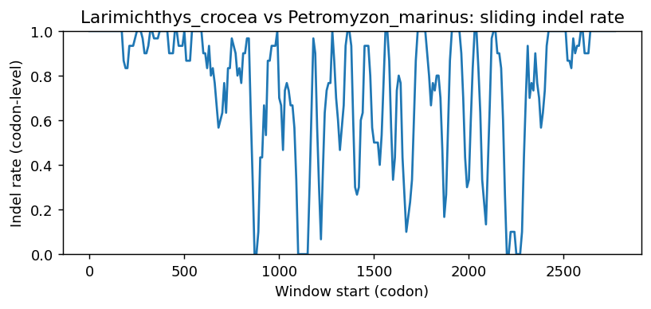
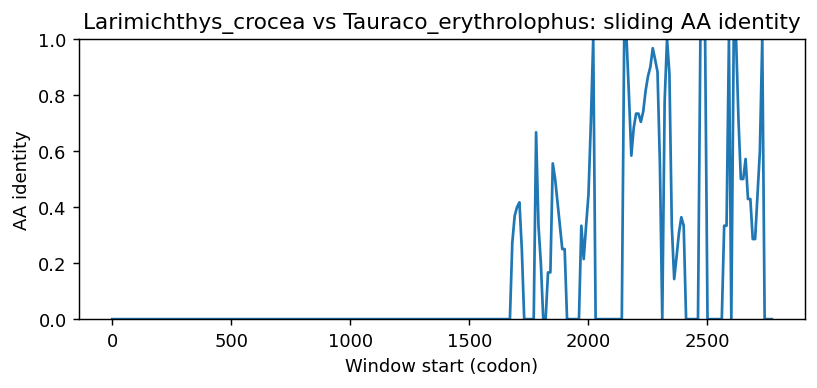

Ortholog Divergence Report
Input: LRCH1.valid.longest.fa · N sequences: 569 · Aligned length: 2776 codons
Reference: Larimichthys_crocea
Quick risk overview
- LOW: 0
- INTERMEDIATE: 0
- HIGH: 161596


Composition & complexity per sequence
Saved as per_sequence_composition.csv. High low-complexity or repeat content can reduce BLAST sensitivity due to soft masking.
| id | GC | GC skew | CpG dens. | AA LCR frac | NT repeat frac | AA len | CDS len |
|---|---|---|---|---|---|---|---|
| Larimichthys_crocea | 0.57372 | -0.06627 | 0.05579 | 0.11027 | 0.82214 | 789 | 2367 |
| Accipiter_gentilis | 0.43192 | 0.08905 | 0.02211 | 0.11406 | 0.70778 | 754 | 2262 |
| Esox_lucius | 0.55654 | -0.03805 | 0.03602 | 0.09149 | 0.75307 | 787 | 2361 |
| Lemur_catta | 0.50274 | -0.00817 | 0.03518 | 0.1 | 0.73699 | 730 | 2190 |
| Mus_caroli | 0.52652 | -0.03849 | 0.03538 | 0.09702 | 0.73307 | 773 | 2319 |
| Gadus_morhua | 0.58716 | -0.06688 | 0.05127 | 0.06178 | 0.80268 | 696 | 2088 |
| Molothrus_aeneus | 0.4463 | 0.05394 | 0.02409 | 0.11667 | 0.72361 | 720 | 2160 |
| Eleginops_maclovinus | 0.59463 | -0.08202 | 0.05551 | 0.11544 | 0.81029 | 745 | 2235 |
| Sardina_pilchardus | 0.56652 | 0.01143 | 0.04686 | 0.10314 | 0.80817 | 669 | 2007 |
| Cercocebus_atys | 0.48481 | -0.03312 | 0.02822 | 0.09245 | 0.73958 | 768 | 2304 |
| Lepus_europaeus | 0.51598 | 0.01479 | 0.03865 | 0.12446 | 0.73534 | 699 | 2097 |
| Muntiacus_reevesi | 0.49616 | 0.00484 | 0.0394 | 0.11095 | 0.73871 | 694 | 2082 |
| Equus_przewalskii | 0.49607 | -0.01847 | 0.03361 | 0.08639 | 0.72426 | 764 | 2292 |
| Bos_javanicus | 0.50262 | -0.03046 | 0.03589 | 0.10499 | 0.73053 | 762 | 2286 |
| Tinamus_guttatus | 0.4241 | 0.07376 | 0.01591 | 0.09385 | 0.70564 | 650 | 1950 |
| Aptenodytes_forsteri | 0.41339 | 0.07135 | 0.01265 | 0.08146 | 0.71676 | 712 | 2136 |
| Cygnus_olor | 0.4443 | 0.07093 | 0.02398 | 0.11185 | 0.71238 | 751 | 2253 |
| Mus_pahari | 0.52707 | -0.03396 | 0.03626 | 0.07383 | 0.75034 | 745 | 2235 |
| Chroicocephalus_ridibundus | 0.44515 | 0.05444 | 0.02722 | 0.11352 | 0.73172 | 784 | 2352 |
| Scomber_japonicus | 0.56055 | -0.09191 | 0.04273 | 0.09643 | 0.80493 | 757 | 2271 |
| Vombatus_ursinus | 0.45866 | -0.02277 | 0.02133 | 0.11358 | 0.75239 | 766 | 2298 |
| Molossus_molossus | 0.50262 | -0.03993 | 0.03317 | 0.10602 | 0.75349 | 764 | 2292 |
| Ursus_americanus | 0.49281 | -0.03802 | 0.03575 | 0.09412 | 0.76209 | 765 | 2295 |
| Embiotoca_jacksoni | 0.59287 | -0.07072 | 0.06795 | 0.07421 | 0.80713 | 795 | 2385 |
| Dromaius_novaehollandiae | 0.4746 | 0.08545 | 0.0379 | 0.21925 | 0.69831 | 748 | 2244 |
| Aotus_nancymaae | 0.49368 | -0.02207 | 0.0279 | 0.09412 | 0.73813 | 765 | 2295 |
| Colobus_angolensis_palliatus | 0.46103 | -0.01001 | 0.02052 | 0.03692 | 0.74103 | 650 | 1950 |
| Manis_pentadactyla | 0.48731 | -0.03411 | 0.0302 | 0.09449 | 0.74803 | 762 | 2286 |
| Chrysochloris_asiatica | 0.49233 | -0.02313 | 0.03024 | 0.11827 | 0.73325 | 761 | 2283 |
| Poecilia_latipinna | 0.59873 | -0.07118 | 0.06163 | 0.12152 | 0.78101 | 790 | 2370 |
| Melanerpes_formicivorus | 0.46101 | 0.08668 | 0.02633 | 0.10526 | 0.72125 | 684 | 2052 |
| Mugil_cephalus | 0.5852 | -0.09556 | 0.05639 | 0.11493 | 0.81066 | 757 | 2271 |
| Panthera_leo | 0.49761 | -0.02707 | 0.03478 | 0.11213 | 0.7462 | 767 | 2301 |
| Halichoerus_grypus | 0.6821 | 0.00452 | 0.08978 | 0.40741 | 0.69444 | 108 | 324 |
| Rhinopithecus_bieti | 0.48655 | -0.02944 | 0.02866 | 0.09245 | 0.72873 | 768 | 2304 |
| Corvus_kubaryi | 0.44198 | 0.05439 | 0.02498 | 0.10125 | 0.72307 | 721 | 2163 |
| Gracilinanus_agilis | 0.45312 | -0.03065 | 0.02128 | 0.11979 | 0.75217 | 768 | 2304 |
| Piliocolobus_tephrosceles | 0.48749 | -0.01866 | 0.03003 | 0.09686 | 0.73533 | 733 | 2199 |
| Dryobates_pubescens | 0.4559 | 0.05295 | 0.02276 | 0.10306 | 0.71727 | 718 | 2154 |
| Physeter_macrocephalus | 0.48579 | -0.02482 | 0.03318 | 0.08527 | 0.75452 | 774 | 2322 |
| Ovis_canadensis | 0.50161 | -0.01558 | 0.03726 | 0.08966 | 0.73057 | 725 | 2175 |
| Vidua_chalybeata | 0.44265 | 0.07828 | 0.02539 | 0.14056 | 0.72621 | 683 | 2049 |
| Pseudorasbora_parva | 0.51468 | 0.00713 | 0.03159 | 0.09692 | 0.79662 | 454 | 1362 |
| Myotis_yumanensis | 0.47244 | -0.04259 | 0.02626 | 0.12336 | 0.73972 | 762 | 2286 |
| Lagopus_muta | 0.44167 | 0.0566 | 0.0215 | 0.11579 | 0.71404 | 760 | 2280 |
| Neophocaena_asiaeorientalis_asiaeorientalis | 0.49152 | -0.02052 | 0.03349 | 0.08941 | 0.74186 | 727 | 2181 |
| Hyperolius_riggenbachi | 0.4433 | 0.0454 | 0.01768 | 0.07511 | 0.77123 | 679 | 2037 |
| Scleropages_formosus | 0.62521 | -0.00342 | 0.07738 | 0.09872 | 0.76154 | 780 | 2340 |
| Antechinus_flavipes | 0.45229 | -0.00963 | 0.01787 | 0.12157 | 0.75817 | 765 | 2295 |
| Nerophis_ophidion | 0.6533 | -0.03683 | 0.0807 | 0.10963 | 0.76471 | 748 | 2244 |
| Echeneis_naucrates | 0.588 | -0.06425 | 0.05602 | 0.10133 | 0.80578 | 750 | 2250 |
| Charadrius_vociferus | 0.4071 | 0.03893 | 0.01422 | 0.09508 | 0.73005 | 610 | 1830 |
| Tachyglossus_aculeatus | 0.48023 | -0.06787 | 0.02957 | 0.1043 | 0.69361 | 767 | 2301 |
| Neogale_vison | 0.49194 | -0.02391 | 0.034 | 0.09542 | 0.75468 | 765 | 2295 |
| Rissa_tridactyla | 0.44212 | 0.1041 | 0.02651 | 0.12273 | 0.72152 | 717 | 2151 |
| Octodon_degus | 0.507 | -0.04918 | 0.03676 | 0.10367 | 0.73972 | 762 | 2286 |
| Hemiscyllium_ocellatum | 0.47885 | 0.06537 | 0.03089 | 0.10914 | 0.73562 | 788 | 2364 |
| Nothoprocta_perdicaria | 0.42183 | 0.03266 | 0.01644 | 0.0938 | 0.71277 | 629 | 1887 |
| Mauremys_mutica | 0.44296 | 0.03407 | 0.02176 | 0.0719 | 0.73369 | 751 | 2253 |
| Suncus_etruscus | 0.46692 | -0.03956 | 0.02535 | 0.1018 | 0.72509 | 776 | 2328 |
| Agelaius_phoeniceus | 0.4446 | 0.05318 | 0.02273 | 0.11683 | 0.72323 | 719 | 2157 |
| Neolamprologus_brichardi | 0.55754 | -0.07692 | 0.0446 | 0.09682 | 0.81231 | 785 | 2355 |
| Anabas_testudineus | 0.57948 | -0.05736 | 0.05494 | 0.10549 | 0.82177 | 692 | 2076 |
| Gavia_stellata | 0.44685 | 0.03831 | 0.02839 | 0.10135 | 0.72838 | 740 | 2220 |
| Pan_troglodytes | 0.48971 | -0.00894 | 0.0298 | 0.0841 | 0.72887 | 761 | 2283 |
| Nyctibius_grandis | 0.44475 | 0.07724 | 0.02973 | 0.1156 | 0.73213 | 718 | 2154 |
| Mesocricetus_auratus | 0.52016 | -0.02498 | 0.03451 | 0.08065 | 0.7267 | 744 | 2232 |
| Corvus_moneduloides | 0.44583 | 0.05481 | 0.02721 | 0.10373 | 0.72476 | 723 | 2169 |
| Micropterus_dolomieu | 0.60411 | -0.12828 | 0.05701 | 0.17367 | 0.7591 | 357 | 1071 |
| Microcaecilia_unicolor | 0.464 | 0.0457 | 0.02368 | 0.08136 | 0.76036 | 676 | 2028 |
| Geospiza_fortis | 0.41228 | 0.01655 | 0.01463 | 0.0848 | 0.7271 | 684 | 2052 |
| Camelus_dromedarius | 0.48799 | -0.02238 | 0.03278 | 0.08781 | 0.74618 | 763 | 2289 |
| Chanos_chanos | 0.51605 | -0.04146 | 0.03682 | 0.10655 | 0.78177 | 779 | 2337 |
| Zonotrichia_leucophrys_gambelii | 0.44968 | 0.04928 | 0.02587 | 0.10388 | 0.73084 | 722 | 2166 |
| Pleurodeles_waltl | 0.47186 | 0.02697 | 0.02889 | 0.13216 | 0.75771 | 681 | 2043 |
| Camelus_bactrianus | 0.45283 | 0.0202 | 0.02346 | 0.04117 | 0.74557 | 583 | 1749 |
| Kogia_breviceps | 0.49123 | -0.02857 | 0.03203 | 0.08553 | 0.74035 | 760 | 2280 |
| Myotis_davidii | 0.47157 | -0.05009 | 0.02626 | 0.10761 | 0.72966 | 762 | 2286 |
| Oryzias_melastigma | 0.58098 | -0.0708 | 0.05572 | 0.16195 | 0.79135 | 778 | 2334 |
| Perognathus_longimembris_pacificus | 0.51362 | -0.01178 | 0.03547 | 0.12451 | 0.72374 | 771 | 2313 |
| Onychomys_torridus | 0.51941 | -0.04296 | 0.03393 | 0.08434 | 0.73539 | 747 | 2241 |
| Seriola_dumerili | 0.58716 | -0.07341 | 0.05462 | 0.11063 | 0.80891 | 696 | 2088 |
| Sorex_fumeus | 0.48469 | -0.02527 | 0.02845 | 0.09055 | 0.74759 | 762 | 2286 |
| Apteryx_rowi | 0.44395 | 0.08931 | 0.02742 | 0.1395 | 0.70827 | 681 | 2043 |
| Macaca_nemestrina | 0.48741 | -0.02939 | 0.02953 | 0.09245 | 0.73264 | 768 | 2304 |
| Scyliorhinus_canicula | 0.47565 | 0.0662 | 0.02898 | 0.0932 | 0.75567 | 794 | 2382 |
| Takifugu_rubripes | 0.54456 | -0.03311 | 0.03814 | 0.06028 | 0.7661 | 647 | 1941 |
| Oryctolagus_cuniculus | 0.51606 | -0.01766 | 0.03647 | 0.11589 | 0.73351 | 768 | 2304 |
| Neomonachus_schauinslandi | 0.4926 | -0.03534 | 0.03309 | 0.0953 | 0.74891 | 766 | 2298 |
| Cyprinodon_variegatus | 0.54695 | -0.00258 | 0.03288 | 0.12535 | 0.76948 | 710 | 2130 |
| Triplophysa_rosa | 0.51758 | -0.018 | 0.03305 | 0.07751 | 0.76959 | 787 | 2361 |
| Otolemur_garnettii | 0.50916 | -0.0054 | 0.03802 | 0.0989 | 0.71886 | 728 | 2184 |
| Rattus_rattus | 0.52557 | -0.01081 | 0.03695 | 0.08239 | 0.7339 | 704 | 2112 |
| Mustela_putorius_furo | 0.49479 | -0.0193 | 0.03474 | 0.09766 | 0.75 | 768 | 2304 |
| Platichthys_flesus | 0.59955 | -0.08507 | 0.0658 | 0.08322 | 0.8085 | 745 | 2235 |
| Polypterus_senegalus | 0.42327 | 0.03927 | 0.01535 | 0.10614 | 0.76471 | 782 | 2346 |
| Solea_senegalensis | 0.57174 | -0.07961 | 0.05681 | 0.15995 | 0.84785 | 769 | 2307 |
| Bubalus_kerabau | 0.50484 | -0.01918 | 0.04059 | 0.10512 | 0.73352 | 723 | 2169 |
| Cervus_canadensis | 0.4989 | -0.02736 | 0.03744 | 0.09908 | 0.74328 | 757 | 2271 |
| Notolabrus_celidotus | 0.59243 | -0.05901 | 0.0575 | 0.11207 | 0.83573 | 696 | 2088 |
| Balaenoptera_acutorostrata | 0.49061 | -0.03473 | 0.03322 | 0.09305 | 0.74749 | 763 | 2289 |
| Zalophus_californianus | 0.49066 | -0.03454 | 0.02913 | 0.09648 | 0.74359 | 767 | 2301 |
| Arvicanthis_niloticus | 0.51748 | -0.02162 | 0.03218 | 0.10769 | 0.72634 | 715 | 2145 |
| Eubalaena_glacialis | 0.48877 | -0.01689 | 0.03303 | 0.07978 | 0.74507 | 727 | 2181 |
| Chrysemys_picta_bellii | 0.4459 | 0.03733 | 0.02279 | 0.07096 | 0.72843 | 761 | 2283 |
| Melopsittacus_undulatus | 0.42637 | 0.08333 | 0.02245 | 0.11501 | 0.71342 | 713 | 2139 |
| Ctenopharyngodon_idella | 0.51122 | -0.029 | 0.03051 | 0.0648 | 0.77128 | 787 | 2361 |
| Pelmatolapia_mariae | 0.56032 | -0.08931 | 0.0456 | 0.10188 | 0.81814 | 746 | 2238 |
| Caretta_caretta | 0.44695 | 0.0544 | 0.023 | 0.11804 | 0.73254 | 754 | 2262 |
| Ictalurus_punctatus | 0.528 | 0.0202 | 0.04402 | 0.072 | 0.78756 | 750 | 2250 |
| Talpa_occidentalis | 0.47507 | -0.01657 | 0.02538 | 0.0748 | 0.75809 | 762 | 2286 |
| Sinocyclocheilus_grahami | 0.51419 | -0.0313 | 0.03136 | 0.06734 | 0.77764 | 787 | 2361 |
| Odobenus_rosmarus_divergens | 0.49239 | -0.03972 | 0.0313 | 0.09648 | 0.74707 | 767 | 2301 |
| Lipotes_vexillifer | 0.49478 | -0.02199 | 0.03526 | 0.09138 | 0.74369 | 766 | 2298 |
| Gouania_willdenowi | 0.53862 | -0.06937 | 0.04116 | 0.12846 | 0.73971 | 794 | 2382 |
| Peromyscus_eremicus | 0.52353 | -0.01311 | 0.03531 | 0.07353 | 0.73284 | 680 | 2040 |
| Dipodomys_spectabilis | 0.51034 | 0.02168 | 0.03272 | 0.12121 | 0.73112 | 693 | 2079 |
| Felis_catus | 0.49935 | -0.03046 | 0.03696 | 0.11343 | 0.74533 | 767 | 2301 |
| Caloenas_nicobarica | 0.44541 | 0.1024 | 0.02913 | 0.12518 | 0.72198 | 687 | 2061 |
| Hirundo_rustica | 0.45171 | 0.04828 | 0.02983 | 0.09746 | 0.73209 | 749 | 2247 |
| Crocodylus_porosus | 0.44444 | 0.02165 | 0.02888 | 0.09318 | 0.71172 | 762 | 2286 |
| Dromiciops_gliroides | 0.45806 | -0.00569 | 0.02348 | 0.12516 | 0.74794 | 767 | 2301 |
| Poecilia_formosa | 0.59873 | -0.07118 | 0.06079 | 0.12152 | 0.78608 | 790 | 2370 |
| Artibeus_jamaicensis | 0.57468 | -0.01524 | 0.05346 | 0.10775 | 0.75252 | 761 | 2283 |
| Rhinopithecus_roxellana | 0.48785 | -0.02847 | 0.02909 | 0.09245 | 0.72873 | 768 | 2304 |
| Phalacrocorax_carbo | 0.44143 | 0.08306 | 0.02525 | 0.12286 | 0.72286 | 700 | 2100 |
| Trematomus_bernacchii | 0.57053 | -0.01465 | 0.05698 | 0.06426 | 0.80303 | 638 | 1914 |
| Hylobates_moloch | 0.48866 | -0.01786 | 0.03055 | 0.0877 | 0.73517 | 764 | 2292 |
| Mesoplodon_densirostris | 0.48994 | -0.00293 | 0.03354 | 0.09626 | 0.72893 | 696 | 2088 |
| Thunnus_albacares | 0.56184 | -0.07164 | 0.04069 | 0.09686 | 0.81803 | 795 | 2385 |
| Phyllopteryx_taeniolatus | 0.60343 | -0.04491 | 0.07366 | 0.09756 | 0.81436 | 738 | 2214 |
| Colossoma_macropomum | 0.56046 | -0.04777 | 0.05357 | 0.09772 | 0.79116 | 747 | 2241 |
| Peromyscus_leucopus | 0.52458 | -0.04429 | 0.03844 | 0.08311 | 0.72073 | 746 | 2238 |
| Salarias_fasciatus | 0.62067 | -0.0741 | 0.06924 | 0.14323 | 0.80508 | 761 | 2283 |
| Anas_platyrhynchos | 0.45187 | 0.06977 | 0.02817 | 0.11349 | 0.71753 | 793 | 2379 |
| Pezoporus_flaviventris | 0.42991 | 0.06832 | 0.02004 | 0.10948 | 0.71918 | 749 | 2247 |
| Manacus_candei | 0.43675 | 0.04268 | 0.02353 | 0.09055 | 0.73369 | 751 | 2253 |
| Strigops_habroptila | 0.43258 | 0.05967 | 0.02182 | 0.10948 | 0.7036 | 749 | 2247 |
| Sarcophilus_harrisii | 0.45039 | -0.01063 | 0.01872 | 0.11227 | 0.75805 | 766 | 2298 |
| Cheilinus_undulatus | 0.5591 | -0.0863 | 0.04606 | 0.13811 | 0.8039 | 753 | 2259 |
| Nomascus_leucogenys | 0.48909 | -0.01873 | 0.02924 | 0.09293 | 0.7356 | 764 | 2292 |
| Camarhynchus_parvulus | 0.45136 | 0.06027 | 0.02583 | 0.12172 | 0.72799 | 723 | 2169 |
| Patagioenas_fasciata | 0.43962 | 0.06173 | 0.02624 | 0.11533 | 0.70511 | 737 | 2211 |
| Lagenorhynchus_obliquidens | 0.48454 | -0.02305 | 0.03266 | 0.08763 | 0.75387 | 776 | 2328 |
| Gambusia_affinis | 0.59796 | -0.09118 | 0.06341 | 0.1117 | 0.7859 | 752 | 2256 |
| Archocentrus_centrarchus | 0.57378 | -0.09373 | 0.0498 | 0.10133 | 0.81022 | 750 | 2250 |
| Athene_cunicularia | 0.40101 | 0.07053 | 0.01011 | 0.08788 | 0.71364 | 660 | 1980 |
| Protopterus_annectens | 0.43088 | 0.01426 | 0.01652 | 0.06336 | 0.69816 | 868 | 2604 |
| Bos_indicus | 0.49556 | -0.00628 | 0.03513 | 0.04933 | 0.73333 | 750 | 2250 |
| Enhydra_lutris_kenyoni | 0.49346 | -0.03625 | 0.03492 | 0.09293 | 0.74346 | 764 | 2292 |
| Pyrgilauda_ruficollis | 0.44169 | 0.06931 | 0.02771 | 0.12391 | 0.73664 | 686 | 2058 |
| Leptonychotes_weddellii | 0.49416 | -0.03762 | 0.0333 | 0.10117 | 0.75227 | 771 | 2313 |
| Chelonia_mydas | 0.44607 | 0.0408 | 0.02265 | 0.11851 | 0.73236 | 751 | 2253 |
| Ornithorhynchus_anatinus | 0.4715 | -0.08791 | 0.02808 | 0.0842 | 0.6943 | 772 | 2316 |
| Pseudopipra_pipra | 0.43839 | 0.04752 | 0.02572 | 0.09574 | 0.73138 | 752 | 2256 |
| Ailuropoda_melanoleuca | 0.49458 | -0.03593 | 0.03469 | 0.09883 | 0.75726 | 769 | 2307 |
| Panthera_pardus | 0.49892 | -0.02693 | 0.03599 | 0.11443 | 0.74686 | 769 | 2307 |
| Pan_paniscus | 0.51458 | -0.02757 | 0.03823 | 0.14066 | 0.7171 | 846 | 2538 |
| Zonotrichia_albicollis | 0.44998 | 0.05123 | 0.02491 | 0.10512 | 0.72937 | 723 | 2169 |
| Hippoglossus_stenolepis | 0.58255 | -0.0937 | 0.06088 | 0.08054 | 0.81521 | 745 | 2235 |
| Mastomys_coucha | 0.52929 | -0.02229 | 0.03626 | 0.09102 | 0.74083 | 791 | 2373 |
| Apodemus_sylvaticus | 0.52599 | -0.02896 | 0.03675 | 0.09677 | 0.73835 | 744 | 2232 |
| Ictidomys_tridecemlineatus | 0.49671 | -0.0194 | 0.0298 | 0.08804 | 0.75077 | 761 | 2283 |
| Labeo_rohita | 0.51292 | -0.02395 | 0.03305 | 0.07497 | 0.75434 | 787 | 2361 |
| Limanda_limanda | 0.61249 | -0.06295 | 0.06787 | 0.08492 | 0.79844 | 683 | 2049 |
| Monodelphis_domestica | 0.45384 | -0.02197 | 0.02168 | 0.11964 | 0.75119 | 769 | 2307 |
| Phycodurus_eques | 0.60411 | -0.04142 | 0.07376 | 0.08043 | 0.81367 | 746 | 2238 |
| Gorilla_gorilla_gorilla | 0.49017 | -0.01426 | 0.03016 | 0.0865 | 0.7287 | 763 | 2289 |
| Poecile_atricapillus | 0.44765 | 0.08798 | 0.02739 | 0.12392 | 0.73391 | 694 | 2082 |
| Falco_peregrinus | 0.44491 | 0.09549 | 0.02802 | 0.10084 | 0.71522 | 714 | 2142 |
| Manis_javanica | 0.48469 | -0.02708 | 0.02932 | 0.09449 | 0.73272 | 762 | 2286 |
| Pygoscelis_adeliae | 0.41302 | 0.07529 | 0.01361 | 0.1035 | 0.70991 | 686 | 2058 |
| Stegostoma_tigrinum | 0.46692 | 0.06348 | 0.0275 | 0.08376 | 0.74012 | 776 | 2328 |
| Mustela_nigripes | 0.49479 | -0.02105 | 0.03517 | 0.09896 | 0.75 | 768 | 2304 |
| Pongo_abelii | 0.52608 | -0.00422 | 0.04219 | 0.18868 | 0.71698 | 901 | 2703 |
| Narcine_bancroftii | 0.48721 | 0.05717 | 0.02787 | 0.07123 | 0.75205 | 730 | 2190 |
| Danio_rerio | 0.5123 | -0.01987 | 0.03267 | 0.0598 | 0.77481 | 786 | 2358 |
| Macaca_thibetana_thibetana | 0.48741 | -0.0276 | 0.02953 | 0.09245 | 0.73872 | 768 | 2304 |
| Alligator_mississippiensis | 0.45169 | 0.02037 | 0.03222 | 0.09285 | 0.71978 | 797 | 2391 |
| Ammospiza_nelsoni | 0.45141 | 0.07427 | 0.02771 | 0.10787 | 0.73178 | 686 | 2058 |
| Xiphophorus_hellerii | 0.6 | -0.06892 | 0.06501 | 0.12152 | 0.78397 | 790 | 2370 |
| Thalassophryne_amazonica | 0.56812 | -0.07143 | 0.05462 | 0.12609 | 0.80676 | 690 | 2070 |
| Colius_striatus | 0.43352 | 0.09287 | 0.02436 | 0.0941 | 0.71021 | 712 | 2136 |
| Scomber_scombrus | 0.56729 | -0.08163 | 0.04585 | 0.10564 | 0.822 | 691 | 2073 |
| Callorhinchus_milii | 0.45855 | 0.03013 | 0.02592 | 0.06477 | 0.76339 | 772 | 2316 |
| Nycticebus_coucang | 0.50022 | -0.01485 | 0.03147 | 0.09174 | 0.72477 | 763 | 2289 |
| Heptranchias_perlo | 0.47813 | 0.043 | 0.03282 | 0.06955 | 0.74409 | 762 | 2286 |
| Arvicola_amphibius | 0.53274 | 0.0037 | 0.04138 | 0.09306 | 0.73067 | 677 | 2031 |
| Corapipo_altera | 0.43869 | 0.05146 | 0.02657 | 0.09429 | 0.73661 | 753 | 2259 |
| Simochromis_diagramma | 0.55669 | -0.06636 | 0.04333 | 0.09682 | 0.80679 | 785 | 2355 |
| Suricata_suricatta | 0.46717 | -0.04077 | 0.02307 | 0.0782 | 0.74085 | 665 | 1995 |
| Sander_lucioperca | 0.59796 | -0.0766 | 0.06364 | 0.11959 | 0.81764 | 786 | 2358 |
| Gopherus_evgoodei | 0.44618 | 0.02098 | 0.02393 | 0.0624 | 0.73115 | 641 | 1923 |
| Dermochelys_coriacea | 0.44116 | 0.03651 | 0.02014 | 0.10067 | 0.73602 | 745 | 2235 |
| Rousettus_aegyptiacus | 0.47466 | -0.0434 | 0.02432 | 0.09642 | 0.75443 | 809 | 2427 |
| Seriola_aureovittata | 0.58407 | -0.06676 | 0.05495 | 0.09686 | 0.80252 | 795 | 2385 |
| Moschus_berezovskii | 0.49784 | -0.01156 | 0.04031 | 0.0964 | 0.74197 | 695 | 2085 |
| Oreochromis_niloticus | 0.55796 | -0.06545 | 0.04418 | 0.09682 | 0.79958 | 785 | 2355 |
| Falco_naumanni | 0.44578 | 0.07079 | 0.02668 | 0.1 | 0.70444 | 750 | 2250 |
| Chlorocebus_sabaeus | 0.48765 | -0.03289 | 0.02905 | 0.09363 | 0.73689 | 769 | 2307 |
| Myiozetetes_cayanensis | 0.43767 | 0.07806 | 0.02402 | 0.09695 | 0.71376 | 722 | 2166 |
| Thunnus_thynnus | 0.56143 | -0.07095 | 0.04069 | 0.09686 | 0.81635 | 795 | 2385 |
| Pseudophryne_corroboree | 0.441 | -0.01729 | 0.01885 | 0.05114 | 0.76402 | 743 | 2229 |
| Rhinatrema_bivittatum | 0.47922 | 0.00578 | 0.02448 | 0.09972 | 0.77378 | 722 | 2166 |
| Grammomys_surdaster | 0.51799 | -0.00366 | 0.03363 | 0.10511 | 0.73627 | 704 | 2112 |
| Petromyzon_marinus | 0.64817 | -0.10398 | 0.09881 | 0.18533 | 0.77007 | 1009 | 3027 |
| Lutra_lutra | 0.49171 | -0.02928 | 0.03361 | 0.09293 | 0.74607 | 764 | 2292 |
| Apteryx_mantelli | 0.4446 | 0.0792 | 0.0263 | 0.1338 | 0.70376 | 710 | 2130 |
| Falco_biarmicus | 0.44538 | 0.09434 | 0.02802 | 0.10084 | 0.71429 | 714 | 2142 |
| Onychostruthus_taczanowskii | 0.43996 | 0.08079 | 0.02883 | 0.12536 | 0.72911 | 694 | 2082 |
| Chamaea_fasciata | 0.4443 | 0.05668 | 0.02519 | 0.12804 | 0.72685 | 781 | 2343 |
| Carassius_gibelio | 0.51673 | -0.02623 | 0.03347 | 0.05464 | 0.77975 | 787 | 2361 |
| Phaenicophaeus_curvirostris | 0.43972 | 0.06452 | 0.02554 | 0.08794 | 0.69598 | 705 | 2115 |
| Aphelocoma_coerulescens | 0.44623 | 0.07743 | 0.0297 | 0.10657 | 0.73479 | 685 | 2055 |
| Globicephala_melas | 0.48997 | -0.03651 | 0.03317 | 0.0877 | 0.75 | 764 | 2292 |
| Anoplopoma_fimbria | 0.57803 | -0.07833 | 0.05205 | 0.08815 | 0.80925 | 692 | 2076 |
| Gallus_gallus | 0.44402 | 0.03547 | 0.0247 | 0.11239 | 0.71435 | 783 | 2349 |
| Bufo_gargarizans | 0.44737 | 0.02157 | 0.0215 | 0.05 | 0.70877 | 760 | 2280 |
| Kryptolebias_marmoratus | 0.54293 | -0.05426 | 0.03705 | 0.1048 | 0.83249 | 792 | 2376 |
| Parambassis_ranga | 0.56847 | -0.09063 | 0.04449 | 0.11757 | 0.82034 | 757 | 2271 |
| Centropristis_striata | 0.58278 | -0.07997 | 0.05728 | 0.11984 | 0.8047 | 751 | 2253 |
| Girardinichthys_multiradiatus | 0.54819 | -0.03846 | 0.03867 | 0.07229 | 0.81777 | 664 | 1992 |
| Galeopterus_variegatus | 0.48657 | -0.02805 | 0.03216 | 0.08719 | 0.72699 | 757 | 2271 |
| Condylura_cristata | 0.47211 | -0.00651 | 0.02548 | 0.07115 | 0.72639 | 759 | 2277 |
| Haplochromis_burtoni | 0.5554 | -0.05853 | 0.04214 | 0.1044 | 0.79853 | 728 | 2184 |
| Passer_montanus | 0.44751 | 0.06379 | 0.02764 | 0.12155 | 0.72882 | 724 | 2172 |
| Phacochoerus_africanus | 0.50411 | -0.03259 | 0.03503 | 0.09209 | 0.75054 | 771 | 2313 |
| Capricornis_sumatraensis | 0.49686 | 0.00777 | 0.0362 | 0.09117 | 0.7371 | 691 | 2073 |
| Geotrypetes_seraphini | 0.47754 | 0.06139 | 0.02744 | 0.11206 | 0.75934 | 705 | 2115 |
| Xiphophorus_couchianus | 0.59789 | -0.06563 | 0.06374 | 0.12152 | 0.78397 | 790 | 2370 |
| Sturnus_vulgaris | 0.44008 | 0.09592 | 0.02524 | 0.11936 | 0.73217 | 687 | 2061 |
| Callorhinus_ursinus | 0.49317 | -0.02308 | 0.03189 | 0.10109 | 0.74818 | 732 | 2196 |
| Acanthopagrus_latus | 0.51847 | -0.03978 | 0.02687 | 0.07914 | 0.80432 | 695 | 2085 |
| Vulpes_lagopus | 0.50643 | -0.00997 | 0.0395 | 0.10193 | 0.74702 | 726 | 2178 |
| Pipra_filicauda | 0.43597 | 0.07105 | 0.02451 | 0.09709 | 0.7203 | 721 | 2163 |
| Melanotaenia_boesemani | 0.55359 | -0.04935 | 0.04668 | 0.08701 | 0.82514 | 793 | 2379 |
| Osmerus_eperlanus | 0.57867 | -0.08602 | 0.04758 | 0.1 | 0.764 | 750 | 2250 |
| Oncorhynchus_nerka | 0.5577 | -0.06615 | 0.03476 | 0.07851 | 0.73359 | 777 | 2331 |
| Phocoena_sinus | 0.49381 | -0.01764 | 0.0344 | 0.08941 | 0.74278 | 727 | 2181 |
| Petaurus_breviceps_papuanus | 0.46112 | -0.00789 | 0.01956 | 0.12005 | 0.75853 | 733 | 2199 |
| Lathamus_discolor | 0.42637 | 0.08114 | 0.02105 | 0.1108 | 0.72557 | 713 | 2139 |
| Pipistrellus_kuhlii | 0.48124 | -0.06981 | 0.02881 | 0.10995 | 0.73691 | 764 | 2292 |
| Lonchura_striata | 0.44598 | 0.06625 | 0.02448 | 0.12188 | 0.73176 | 722 | 2166 |
| Chanodichthys_erythropterus | 0.50072 | -0.05476 | 0.02743 | 0.07359 | 0.7797 | 693 | 2079 |
| Pteropus_alecto | 0.47168 | -0.02108 | 0.02249 | 0.09857 | 0.75486 | 771 | 2313 |
| Gadus_macrocephalus | 0.59333 | -0.07678 | 0.05392 | 0.07333 | 0.78 | 600 | 1800 |
| Echinops_telfairi | 0.51836 | -0.01039 | 0.03967 | 0.05874 | 0.7626 | 681 | 2043 |
| Pungitius_pungitius | 0.59497 | -0.09373 | 0.06334 | 0.10063 | 0.78029 | 795 | 2385 |
| Bombina_bombina | 0.43451 | -0.01012 | 0.02005 | 0.04252 | 0.72532 | 682 | 2046 |
| Channa_argus | 0.56549 | -0.06607 | 0.05208 | 0.05793 | 0.83669 | 794 | 2382 |
| Ambystoma_mexicanum | 0.49142 | -0.02757 | 0.03118 | 0.11924 | 0.71138 | 738 | 2214 |
| Hippopotamus_amphibius_kiboko | 0.49839 | -0.01107 | 0.03404 | 0.08828 | 0.74023 | 725 | 2175 |
| Opisthocomus_hoazin | 0.4129 | -0.00114 | 0.01225 | 0.06497 | 0.70669 | 708 | 2124 |
| Rhinichthys_klamathensis_goyatoka | 0.51504 | -0.02632 | 0.03263 | 0.0648 | 0.78653 | 787 | 2361 |
| Sparus_aurata | 0.524 | -0.05246 | 0.02706 | 0.10733 | 0.79712 | 764 | 2292 |
| Toxotes_jaculatrix | 0.57423 | -0.07256 | 0.04887 | 0.0819 | 0.81561 | 696 | 2088 |
| Sus_scrofa | 0.50238 | -0.03442 | 0.03374 | 0.09209 | 0.74492 | 771 | 2313 |
| Danio_aesculapii | 0.502 | -0.02837 | 0.0285 | 0.07343 | 0.75701 | 749 | 2247 |
| Oenanthe_melanoleuca | 0.43855 | 0.0552 | 0.02562 | 0.13827 | 0.74209 | 716 | 2148 |
| Chelmon_rostratus | 0.53189 | -0.06763 | 0.02975 | 0.0777 | 0.82158 | 695 | 2085 |
| Pseudorca_crassidens | 0.48418 | -0.03905 | 0.03166 | 0.08385 | 0.75216 | 811 | 2433 |
| Cygnus_atratus | 0.44476 | 0.09434 | 0.02519 | 0.11748 | 0.71096 | 715 | 2145 |
| Rhincodon_typus | 0.46392 | 0.05741 | 0.02879 | 0.10052 | 0.74141 | 776 | 2328 |
| Gadus_chalcogrammus | 0.58954 | -0.06767 | 0.05366 | 0.05718 | 0.78945 | 752 | 2256 |
| Callithrix_jacchus | 0.49608 | -0.02281 | 0.02873 | 0.09269 | 0.73412 | 766 | 2298 |
| Orycteropus_afer_afer | 0.48543 | 0.00938 | 0.02779 | 0.09836 | 0.75364 | 732 | 2196 |
| Pleuronectes_platessa | 0.58986 | -0.04514 | 0.05943 | 0.04147 | 0.80338 | 651 | 1953 |
| Scophthalmus_maximus | 0.61653 | -0.08417 | 0.07655 | 0.12929 | 0.81266 | 758 | 2274 |
| Phaethon_lepturus | 0.41734 | 0.06154 | 0.01874 | 0.07384 | 0.72338 | 623 | 1869 |
| Oryx_dammah | 0.49692 | -0.0354 | 0.03476 | 0.08311 | 0.73263 | 758 | 2274 |
| Cyrtonyx_montezumae | 0.43561 | 0.09565 | 0.02132 | 0.11222 | 0.7197 | 704 | 2112 |
| Pelodiscus_sinensis | 0.40575 | 0.04557 | 0.00976 | 0.02311 | 0.71957 | 649 | 1947 |
| Theropithecus_gelada | 0.48631 | -0.0277 | 0.02957 | 0.09126 | 0.73577 | 767 | 2301 |
| Fukomys_damarensis | 0.45342 | -0.01425 | 0.01562 | 0.04523 | 0.76737 | 619 | 1857 |
| Hypomesus_transpacificus | 0.58239 | -0.05832 | 0.03652 | 0.17358 | 0.74969 | 265 | 795 |
| Trichomycterus_rosablanca | 0.49505 | 0.03048 | 0.03349 | 0.10184 | 0.77463 | 707 | 2121 |
| Parus_major | 0.44429 | 0.06886 | 0.0265 | 0.11781 | 0.72237 | 730 | 2190 |
| Chinchilla_lanigera | 0.44496 | 0.01503 | 0.0139 | 0.04321 | 0.76183 | 648 | 1944 |
| Panthera_tigris | 0.49717 | -0.03067 | 0.03487 | 0.1098 | 0.74641 | 765 | 2295 |
| Leopardus_geoffroyi | 0.49848 | -0.02703 | 0.03609 | 0.11213 | 0.74446 | 767 | 2301 |
| Etheostoma_cragini | 0.58876 | -0.09925 | 0.0589 | 0.12616 | 0.80035 | 753 | 2259 |
| Epinephelus_fuscoguttatus | 0.57966 | -0.06744 | 0.05509 | 0.11475 | 0.81841 | 793 | 2379 |
| Acinonyx_jubatus | 0.5026 | -0.02245 | 0.03734 | 0.11328 | 0.74566 | 768 | 2304 |
| Microcebus_murinus | 0.50591 | -0.01818 | 0.03418 | 0.08936 | 0.72799 | 761 | 2283 |
| Engraulis_encrasicolus | 0.56284 | 0.08439 | 0.0471 | 0.26103 | 0.80664 | 793 | 2379 |
| Tursiops_truncatus | 0.48407 | -0.01957 | 0.03274 | 0.08527 | 0.74892 | 774 | 2322 |
| Lontra_canadensis | 0.49192 | -0.03375 | 0.03497 | 0.09305 | 0.74399 | 763 | 2289 |
| Serinus_canaria | 0.44072 | 0.07166 | 0.02577 | 0.12536 | 0.7381 | 686 | 2058 |
| Tupaia_chinensis | 0.48153 | -0.00758 | 0.02783 | 0.09713 | 0.74054 | 731 | 2193 |
| Sapajus_apella | 0.49478 | -0.02551 | 0.0296 | 0.09138 | 0.71889 | 766 | 2298 |
| Harpia_harpyja | 0.43446 | 0.07892 | 0.02475 | 0.13411 | 0.71441 | 768 | 2304 |
| Clinocottus_analis | 0.58113 | -0.06638 | 0.06082 | 0.10063 | 0.80126 | 795 | 2385 |
| Onychostoma_macrolepis | 0.51334 | -0.03135 | 0.03178 | 0.04956 | 0.77975 | 787 | 2361 |
| Mustela_lutreola | 0.4902 | -0.03111 | 0.03269 | 0.09281 | 0.7451 | 765 | 2295 |
| Pelobates_fuscus | 0.42778 | -0.0303 | 0.01945 | 0.03611 | 0.70972 | 720 | 2160 |
| Pongo_pygmaeus | 0.51448 | -0.04335 | 0.03796 | 0.14554 | 0.71909 | 852 | 2556 |
| Ochotona_princeps | 0.4915 | -0.01418 | 0.02964 | 0.12288 | 0.75425 | 765 | 2295 |
| Pteropus_vampyrus | 0.42461 | 0.01604 | 0.01408 | 0.0 | 0.74069 | 734 | 2202 |
| Myxocyprinus_asiaticus | 0.50868 | -0.02914 | 0.02712 | 0.0648 | 0.76789 | 787 | 2361 |
| Thunnus_maccoyii | 0.56333 | -0.05357 | 0.04117 | 0.10562 | 0.82945 | 729 | 2187 |
| Amia_calva | 0.5269 | 0.00804 | 0.03263 | 0.05337 | 0.73359 | 787 | 2361 |
| Acomys_russatus | 0.51413 | -0.04538 | 0.03321 | 0.08075 | 0.72813 | 743 | 2229 |
| Pteropus_giganteus | 0.46733 | 0.02128 | 0.02226 | 0.09091 | 0.75758 | 704 | 2112 |
| Myotis_brandtii | 0.47087 | -0.04558 | 0.02717 | 0.10644 | 0.7385 | 761 | 2283 |
| Macaca_fascicularis | 0.48741 | -0.0276 | 0.02996 | 0.09245 | 0.73872 | 768 | 2304 |
| Gavialis_gangeticus | 0.40354 | 0.02378 | 0.01213 | 0.06515 | 0.69343 | 660 | 1980 |
| Sorex_araneus | 0.48799 | -0.02596 | 0.03016 | 0.09174 | 0.75579 | 763 | 2289 |
| Cyprinodon_tularosa | 0.52915 | -0.06981 | 0.03295 | 0.11749 | 0.78104 | 749 | 2247 |
| Sturnira_hondurensis | 0.57412 | -0.01757 | 0.05441 | 0.08816 | 0.75263 | 760 | 2280 |
| Bubalus_bubalis | 0.50373 | -0.03226 | 0.03866 | 0.10145 | 0.73079 | 759 | 2277 |
| Marmota_flaviventris | 0.49353 | 0.01652 | 0.02975 | 0.11511 | 0.74101 | 695 | 2085 |
| Prinia_subflava | 0.449 | 0.08913 | 0.02734 | 0.12445 | 0.73353 | 683 | 2049 |
| Alosa_sapidissima | 0.56437 | 0.02611 | 0.04467 | 0.15605 | 0.81578 | 769 | 2307 |
| Equus_quagga | 0.49617 | 0.01544 | 0.03642 | 0.09483 | 0.71408 | 696 | 2088 |
| Latimeria_chalumnae | 0.45019 | 0.06722 | 0.01584 | 0.06844 | 0.77235 | 716 | 2148 |
| Capra_hircus | 0.49725 | -0.0157 | 0.03399 | 0.08678 | 0.74059 | 726 | 2178 |
| Pogoniulus_pusillus | 0.44955 | 0.05114 | 0.023 | 0.09706 | 0.72158 | 783 | 2349 |
| Melospiza_melodia_melodia | 0.44885 | 0.03134 | 0.02687 | 0.09463 | 0.72975 | 782 | 2346 |
| Myotis_myotis | 0.47036 | -0.03828 | 0.0268 | 0.1054 | 0.74001 | 759 | 2277 |
| Lagopus_leucura | 0.4425 | 0.07237 | 0.02282 | 0.12809 | 0.71907 | 687 | 2061 |
| Diceros_bicornis_minor | 0.4902 | -0.02222 | 0.03226 | 0.08889 | 0.74815 | 765 | 2295 |
| Salmo_trutta | 0.55696 | -0.06113 | 0.03785 | 0.08953 | 0.76251 | 793 | 2379 |
| Periophthalmus_magnuspinnatus | 0.60109 | -0.0314 | 0.07505 | 0.07303 | 0.80179 | 671 | 2013 |
| Dasypus_novemcinctus | 0.51726 | 0.00088 | 0.03953 | 0.09809 | 0.75341 | 734 | 2202 |
| Dendropsophus_ebraccatus | 0.45189 | 0.01901 | 0.02149 | 0.06314 | 0.70103 | 776 | 2328 |
| Amblyraja_radiata | 0.4734 | 0.07491 | 0.0306 | 0.08112 | 0.72739 | 752 | 2256 |
| Melospiza_georgiana | 0.45199 | 0.04801 | 0.02587 | 0.10249 | 0.72345 | 722 | 2166 |
| Pezoporus_occidentalis | 0.42991 | 0.06418 | 0.02048 | 0.10948 | 0.72363 | 749 | 2247 |
| Mus_musculus | 0.55302 | -0.0268 | 0.04715 | 0.15735 | 0.73736 | 877 | 2631 |
| Neofelis_nebulosa | 0.49805 | -0.02524 | 0.03599 | 0.11443 | 0.75119 | 769 | 2307 |
| Phodopus_roborovskii | 0.51857 | 0.00287 | 0.03221 | 0.06241 | 0.71917 | 673 | 2019 |
| Dunckerocampus_dactyliophorus | 0.59626 | -0.03936 | 0.06948 | 0.06466 | 0.78927 | 696 | 2088 |
| Eptesicus_fuscus | 0.47632 | -0.0153 | 0.02961 | 0.10246 | 0.71812 | 732 | 2196 |
| Nipponia_nippon | 0.40841 | 0.01225 | 0.01352 | 0.06907 | 0.71722 | 666 | 1998 |
| Rattus_norvegicus | 0.52688 | -0.03231 | 0.0381 | 0.09409 | 0.74776 | 744 | 2232 |
| Heterodontus_francisci | 0.48224 | 0.07187 | 0.03082 | 0.10911 | 0.72315 | 779 | 2337 |
| Bos_mutus | 0.50252 | -0.01825 | 0.0367 | 0.11004 | 0.73453 | 727 | 2181 |
| Mirounga_angustirostris | 0.49697 | -0.03136 | 0.03421 | 0.1 | 0.74978 | 770 | 2310 |
| Alligator_sinensis | 0.40066 | 0.04918 | 0.01479 | 0.0509 | 0.69677 | 609 | 1827 |
| Propithecus_coquereli | 0.49791 | -0.00745 | 0.03479 | 0.07371 | 0.73899 | 719 | 2157 |
| Equus_caballus | 0.49672 | -0.02199 | 0.03409 | 0.0865 | 0.72302 | 763 | 2289 |
| Miniopterus_natalensis | 0.4433 | 0.02326 | 0.01777 | 0.06873 | 0.74914 | 582 | 1746 |
| Eleutherodactylus_coqui | 0.43319 | -0.01732 | 0.02298 | 0.05626 | 0.7098 | 711 | 2133 |
| Oxyura_jamaicensis | 0.44459 | 0.07508 | 0.02493 | 0.10547 | 0.72052 | 749 | 2247 |
| Passer_domesticus | 0.44645 | 0.05688 | 0.02587 | 0.11911 | 0.72068 | 722 | 2166 |
| Ochotona_curzoniae | 0.495 | -0.02371 | 0.02913 | 0.12386 | 0.76532 | 767 | 2301 |
| Rana_temporaria | 0.42157 | -0.0144 | 0.01681 | 0.05462 | 0.74697 | 714 | 2142 |
| Mustela_erminea | 0.49413 | -0.02551 | 0.03522 | 0.09778 | 0.75141 | 767 | 2301 |
| Phasianus_colchicus | 0.44487 | 0.0429 | 0.02376 | 0.11578 | 0.71925 | 786 | 2358 |
| Labrus_mixtus | 0.57913 | -0.07176 | 0.05794 | 0.1313 | 0.8099 | 754 | 2262 |
| Erpetoichthys_calabaricus | 0.42889 | 0.0308 | 0.01762 | 0.11361 | 0.75649 | 757 | 2271 |
| Lates_calcarifer | 0.57981 | -0.09202 | 0.05161 | 0.09524 | 0.81085 | 756 | 2268 |
| Takifugu_flavidus | 0.54405 | -0.03598 | 0.03814 | 0.06028 | 0.76352 | 647 | 1941 |
| Clarias_gariepinus | 0.54686 | 0.02506 | 0.0575 | 0.12467 | 0.79399 | 754 | 2262 |
| Cavia_porcellus | 0.50942 | -0.01462 | 0.03462 | 0.10512 | 0.73631 | 761 | 2283 |
| Cololabis_saira | 0.59016 | -0.07506 | 0.05864 | 0.11544 | 0.78121 | 745 | 2235 |
| Panthera_onca | 0.4974 | -0.02967 | 0.03474 | 0.11328 | 0.74653 | 768 | 2304 |
| Rhinolophus_ferrumequinum | 0.47538 | -0.02475 | 0.02398 | 0.0902 | 0.75686 | 765 | 2295 |
| Mastacembelus_armatus | 0.57946 | -0.08785 | 0.05093 | 0.10624 | 0.79991 | 753 | 2259 |
| Doryrhamphus_excisus | 0.61443 | -0.04179 | 0.07927 | 0.10226 | 0.7977 | 753 | 2259 |
| Chiroxiphia_lanceolata | 0.43794 | 0.05466 | 0.02483 | 0.09309 | 0.73493 | 752 | 2256 |
| Lynx_canadensis | 0.49826 | -0.02265 | 0.03647 | 0.11328 | 0.74783 | 768 | 2304 |
| Syngnathoides_biaculeatus | 0.58244 | -0.04645 | 0.06997 | 0.05972 | 0.80755 | 653 | 1959 |
| Mauremys_reevesii | 0.44385 | 0.032 | 0.0222 | 0.05593 | 0.73014 | 751 | 2253 |
| Plectropomus_leopardus | 0.59518 | -0.0759 | 0.06626 | 0.11974 | 0.80702 | 760 | 2280 |
| Bison_bison_bison | 0.46545 | 0.01663 | 0.02544 | 0.06136 | 0.71973 | 603 | 1809 |
| Lepisosteus_oculatus | 0.55243 | 0.02315 | 0.04051 | 0.03964 | 0.74297 | 782 | 2346 |
| Nanorana_parkeri | 0.41795 | 0.0 | 0.0159 | 0.03927 | 0.74053 | 713 | 2139 |
| Aquila_chrysaetos_chrysaetos | 0.43124 | 0.08174 | 0.0222 | 0.11227 | 0.70931 | 766 | 2298 |
| Motacilla_alba_alba | 0.4471 | 0.04158 | 0.02834 | 0.11421 | 0.72953 | 753 | 2259 |
| Xiphias_gladius | 0.5772 | -0.09 | 0.05149 | 0.08658 | 0.79654 | 693 | 2079 |
| Phocoena_phocoena | 0.49368 | -0.02913 | 0.03357 | 0.08889 | 0.74423 | 765 | 2295 |
| Psammomys_obesus | 0.52512 | -0.03161 | 0.03802 | 0.09043 | 0.73526 | 763 | 2289 |
| Cervus_elaphus | 0.50022 | -0.02993 | 0.03789 | 0.09908 | 0.74328 | 757 | 2271 |
| Tachysurus_fulvidraco | 0.53034 | 0.00839 | 0.05059 | 0.06917 | 0.81837 | 824 | 2472 |
| Syngnathus_scovelli | 0.64182 | -0.0227 | 0.09859 | 0.12982 | 0.78149 | 778 | 2334 |
| Cuculus_canorus | 0.43248 | 0.05022 | 0.02409 | 0.08499 | 0.7101 | 706 | 2118 |
| Orcinus_orca | 0.48947 | -0.00759 | 0.03347 | 0.0855 | 0.74845 | 807 | 2421 |
| Gasterosteus_aculeatus | 0.55784 | -0.15537 | 0.05737 | 0.18768 | 0.73086 | 1023 | 3069 |
| Nothobranchius_furzeri | 0.55063 | -0.06513 | 0.04137 | 0.1038 | 0.79916 | 790 | 2370 |
| Oryzias_latipes | 0.55482 | -0.07778 | 0.04626 | 0.10304 | 0.78776 | 757 | 2271 |
| Scatophagus_argus | 0.51072 | -0.05162 | 0.02772 | 0.12198 | 0.8101 | 746 | 2238 |
| Symphalangus_syndactylus | 0.48909 | -0.01695 | 0.03012 | 0.0877 | 0.73342 | 764 | 2292 |
| Canis_lupus_familiaris | 0.50651 | -0.01799 | 0.03951 | 0.09896 | 0.74696 | 768 | 2304 |
| Syngnathus_acus | 0.64491 | -0.028 | 0.10144 | 0.12917 | 0.79259 | 720 | 2160 |
| Vulpes_vulpes | 0.5081 | -0.02414 | 0.03988 | 0.09724 | 0.7477 | 761 | 2283 |
| Tympanuchus_pallidicinctus | 0.4443 | 0.03514 | 0.02322 | 0.11139 | 0.72532 | 790 | 2370 |
| Corythoichthys_intestinalis | 0.583 | -0.04784 | 0.07066 | 0.12686 | 0.79082 | 741 | 2223 |
| Corvus_brachyrhynchos | 0.40655 | 0.03275 | 0.01281 | 0.07066 | 0.71429 | 651 | 1953 |
| Lagenorhynchus_albirostris | 0.48649 | -0.01587 | 0.03348 | 0.0888 | 0.75418 | 777 | 2331 |
| Ceratotherium_simum_simum | 0.49192 | -0.01421 | 0.03278 | 0.0865 | 0.75229 | 763 | 2289 |
| Saccopteryx_leptura | 0.48822 | -0.03307 | 0.03055 | 0.09162 | 0.74171 | 764 | 2292 |
| Puma_yagouaroundi | 0.50022 | -0.02172 | 0.03696 | 0.11213 | 0.74663 | 767 | 2301 |
| Lynx_rufus | 0.49909 | -0.01183 | 0.03771 | 0.11989 | 0.74659 | 734 | 2202 |
| Dicentrarchus_labrax | 0.55262 | -0.06677 | 0.04069 | 0.1283 | 0.80377 | 795 | 2385 |
| Tyto_alba | 0.4409 | 0.08635 | 0.02524 | 0.11687 | 0.70031 | 753 | 2259 |
| Delphinapterus_leucas | 0.493 | -0.03283 | 0.03414 | 0.0853 | 0.74234 | 762 | 2286 |
| Corvus_hawaiiensis | 0.44444 | 0.05394 | 0.02629 | 0.10373 | 0.72568 | 723 | 2169 |
| Neopelma_chrysocephalum | 0.43559 | 0.04065 | 0.02569 | 0.09429 | 0.72953 | 753 | 2259 |
| Maylandia_zebra | 0.55754 | -0.06931 | 0.04418 | 0.09809 | 0.80594 | 785 | 2355 |
| Desmodus_rotundus | 0.55818 | -0.02351 | 0.04945 | 0.10499 | 0.73578 | 762 | 2286 |
| Ursus_maritimus | 0.48828 | -0.00686 | 0.03636 | 0.1033 | 0.75562 | 697 | 2091 |
| Triplophysa_dalaica | 0.51334 | -0.02475 | 0.03263 | 0.06607 | 0.77721 | 787 | 2361 |
| Neopsephotus_bourkii | 0.42857 | 0.0675 | 0.02048 | 0.10013 | 0.70494 | 749 | 2247 |
| Balaenoptera_ricei | 0.49154 | -0.01767 | 0.03385 | 0.0823 | 0.74851 | 729 | 2187 |
| Cebidichthys_violaceus | 0.56399 | -0.07398 | 0.05019 | 0.10408 | 0.79184 | 711 | 2133 |
| Ranitomeya_imitator | 0.43039 | 0.00948 | 0.01906 | 0.0517 | 0.722 | 735 | 2205 |
| Epinephelus_lanceolatus | 0.56385 | -0.0646 | 0.04751 | 0.10927 | 0.82434 | 723 | 2169 |
| Boleophthalmus_pectinirostris | 0.57235 | -0.03883 | 0.04941 | 0.08741 | 0.80741 | 675 | 2025 |
| Balaenoptera_musculus | 0.49192 | -0.03197 | 0.03322 | 0.07733 | 0.74443 | 763 | 2289 |
| Jaculus_jaculus | 0.49757 | -0.03106 | 0.02694 | 0.10066 | 0.73687 | 755 | 2265 |
| Brachyistius_frenatus | 0.59119 | -0.07092 | 0.06669 | 0.07421 | 0.80629 | 795 | 2385 |
| Hipposideros_armiger | 0.50471 | -0.03807 | 0.03217 | 0.14706 | 0.75882 | 850 | 2550 |
| Haliaeetus_albicilla | 0.43755 | 0.07874 | 0.02499 | 0.12145 | 0.70844 | 774 | 2322 |
| Paramormyrops_kingsleyae | 0.57518 | -0.02651 | 0.04407 | 0.03177 | 0.74799 | 787 | 2361 |
| Ovis_aries | 0.5011 | -0.02892 | 0.03559 | 0.08432 | 0.7365 | 759 | 2277 |
| Emydura_macquarii_macquarii | 0.40396 | 0.06225 | 0.01124 | 0.07384 | 0.71589 | 623 | 1869 |
| Seriola_lalandi_dorsalis | 0.58621 | -0.06863 | 0.05462 | 0.11063 | 0.80412 | 696 | 2088 |
| Trachypithecus_francoisi | 0.48642 | -0.03901 | 0.02804 | 0.10349 | 0.73351 | 773 | 2319 |
| Bufo_bufo | 0.45044 | 0.00279 | 0.02259 | 0.0665 | 0.70891 | 797 | 2391 |
| Camelus_ferus | 0.48711 | -0.02422 | 0.03234 | 0.08781 | 0.74618 | 763 | 2289 |
| Pteronotus_mesoamericanus | 0.56589 | -0.01048 | 0.05839 | 0.16005 | 0.73279 | 731 | 2193 |
| Grus_americana | 0.43669 | 0.11087 | 0.02329 | 0.12011 | 0.71508 | 716 | 2148 |
| Oncorhynchus_keta | 0.54878 | -0.04856 | 0.03299 | 0.05827 | 0.72313 | 738 | 2214 |
| Nestor_notabilis | 0.39468 | 0.04404 | 0.00716 | 0.08896 | 0.70859 | 652 | 1956 |
| Erinaceus_europaeus | 0.48129 | -0.03797 | 0.02481 | 0.09399 | 0.7463 | 766 | 2298 |
| Delphinus_delphis | 0.49084 | -0.03111 | 0.03317 | 0.0877 | 0.75 | 764 | 2292 |
| Entelurus_aequoreus | 0.63122 | -0.00355 | 0.07406 | 0.06999 | 0.78735 | 743 | 2229 |
| Semicossyphus_pulcher | 0.58267 | -0.06868 | 0.05807 | 0.10686 | 0.83333 | 758 | 2274 |
| Clupea_harengus | 0.55191 | 0.0063 | 0.04125 | 0.08048 | 0.81967 | 671 | 2013 |
| Phoca_vitulina | 0.49545 | -0.03762 | 0.03296 | 0.09883 | 0.75249 | 769 | 2307 |
| Dipodomys_merriami | 0.51032 | 0.0 | 0.03383 | 0.12648 | 0.73825 | 759 | 2277 |
| Prionailurus_viverrinus | 0.49794 | -0.01194 | 0.03797 | 0.11385 | 0.74714 | 729 | 2187 |
| Trichosurus_vulpecula | 0.45602 | 0.01356 | 0.02188 | 0.13695 | 0.75606 | 701 | 2103 |
| Pezoporus_wallicus | 0.39799 | 0.06525 | 0.00689 | 0.09221 | 0.72178 | 629 | 1887 |
| Etheostoma_spectabile | 0.58705 | -0.07026 | 0.05758 | 0.10504 | 0.80528 | 695 | 2085 |
| Heterocephalus_glaber | 0.48973 | -0.01695 | 0.02535 | 0.09436 | 0.74006 | 763 | 2289 |
| Haliaeetus_leucocephalus | 0.45739 | 0.04699 | 0.0298 | 0.09729 | 0.71569 | 884 | 2652 |
| Papio_anubis | 0.48741 | -0.02939 | 0.02953 | 0.09245 | 0.73958 | 768 | 2304 |
| Cottoperca_gobio | 0.57929 | -0.12477 | 0.0594 | 0.03883 | 0.78857 | 309 | 927 |
| Syngnathus_typhle | 0.61624 | 0.00998 | 0.0927 | 0.08733 | 0.76548 | 813 | 2439 |
| Nannospalax_galili | 0.51027 | 0.00514 | 0.03103 | 0.10616 | 0.73045 | 763 | 2289 |
| Betta_splendens | 0.59958 | -0.03589 | 0.06501 | 0.09114 | 0.79705 | 790 | 2370 |
| Catharus_ustulatus | 0.44107 | 0.06263 | 0.02257 | 0.12017 | 0.71823 | 724 | 2172 |
| Hypanus_sabinus | 0.45484 | 0.09314 | 0.02422 | 0.10894 | 0.75559 | 716 | 2148 |
| Synchiropus_splendidus | 0.514 | -0.05021 | 0.02801 | 0.0643 | 0.78171 | 762 | 2286 |
| Haemorhous_mexicanus | 0.44461 | 0.07291 | 0.02711 | 0.12772 | 0.74407 | 689 | 2067 |
| Amphiprion_ocellaris | 0.59433 | -0.06335 | 0.06729 | 0.09518 | 0.81387 | 788 | 2364 |
| Falco_cherrug | 0.44538 | 0.09434 | 0.02802 | 0.10084 | 0.71429 | 714 | 2142 |
| Ictalurus_furcatus | 0.52237 | 0.00552 | 0.04379 | 0.0404 | 0.79509 | 693 | 2079 |
| Poecilia_mexicana | 0.60169 | -0.07293 | 0.06374 | 0.12152 | 0.78861 | 790 | 2370 |
| Pygocentrus_nattereri | 0.55964 | -0.03855 | 0.05036 | 0.10787 | 0.79399 | 788 | 2364 |
| Choloepus_didactylus | 0.50152 | -0.02679 | 0.03079 | 0.11313 | 0.73906 | 769 | 2307 |
| Leucoraja_erinaceus | 0.47252 | 0.07317 | 0.02971 | 0.08112 | 0.73183 | 752 | 2256 |
| Ursus_arctos | 0.49325 | -0.03887 | 0.03575 | 0.09412 | 0.76383 | 765 | 2295 |
| Chionomys_nivalis | 0.53065 | -0.03879 | 0.04118 | 0.08456 | 0.71767 | 745 | 2235 |
| Pimephales_promelas | 0.51523 | -0.02956 | 0.03343 | 0.06472 | 0.78934 | 788 | 2364 |
| Poeciliopsis_prolifica | 0.59451 | -0.06033 | 0.06247 | 0.11266 | 0.78143 | 790 | 2370 |
| Astyanax_mexicanus | 0.55924 | 0.00835 | 0.05565 | 0.10701 | 0.77452 | 785 | 2355 |
| Mirounga_leonina | 0.49718 | -0.03226 | 0.03426 | 0.09883 | 0.75033 | 769 | 2307 |
| Saimiri_boliviensis | 0.52091 | -0.04426 | 0.03987 | 0.12544 | 0.72138 | 853 | 2559 |
| Macaca_mulatta | 0.48655 | -0.02765 | 0.02953 | 0.09245 | 0.73524 | 768 | 2304 |
| Columba_livia | 0.48576 | 0.0729 | 0.04005 | 0.21709 | 0.70439 | 866 | 2598 |
| Xenopus_tropicalis | 0.44586 | 0.03062 | 0.02073 | 0.03672 | 0.71186 | 708 | 2124 |
| Anomalospiza_imberbis | 0.45463 | 0.06921 | 0.02874 | 0.13269 | 0.72549 | 731 | 2193 |
| Elephas_maximus_indicus | 0.49759 | -0.01232 | 0.03593 | 0.10644 | 0.74945 | 761 | 2283 |
| Sebastes_umbrosus | 0.57767 | -0.07849 | 0.05838 | 0.11209 | 0.81234 | 794 | 2382 |
| Xiphophorus_maculatus | 0.59747 | -0.07062 | 0.06332 | 0.10633 | 0.78861 | 790 | 2370 |
| Vidua_macroura | 0.44444 | 0.08114 | 0.02584 | 0.12427 | 0.72466 | 684 | 2052 |
| Anas_acuta | 0.44842 | 0.10838 | 0.02661 | 0.1238 | 0.70793 | 727 | 2181 |
| Silurus_meridionalis | 0.51891 | 0.03259 | 0.04408 | 0.05607 | 0.77214 | 749 | 2247 |
| Egretta_garzetta | 0.40557 | 0.07737 | 0.01244 | 0.1048 | 0.7087 | 563 | 1689 |
| Empidonax_traillii | 0.43675 | 0.04878 | 0.02398 | 0.09188 | 0.71993 | 751 | 2253 |
| Meriones_unguiculatus | 0.52193 | -0.03025 | 0.03686 | 0.08289 | 0.73509 | 760 | 2280 |
| Cyclopterus_lumpus | 0.57375 | -0.07513 | 0.05367 | 0.10776 | 0.8137 | 696 | 2088 |
| Eumetopias_jubatus | 0.4902 | -0.01767 | 0.03011 | 0.09986 | 0.7451 | 731 | 2193 |
| Spea_bombifrons | 0.42339 | -0.04339 | 0.01927 | 0.08468 | 0.7397 | 744 | 2232 |
| Peromyscus_californicus_insignis | 0.5231 | -0.03945 | 0.03591 | 0.06326 | 0.71916 | 743 | 2229 |
| Cricetulus_griseus | 0.50794 | 0.02083 | 0.02936 | 0.05772 | 0.72631 | 693 | 2079 |
| Prionailurus_bengalensis | 0.49651 | -0.02812 | 0.03536 | 0.10864 | 0.74607 | 764 | 2292 |
| Bos_indicus_x_Bos_taurus | 0.50284 | -0.03388 | 0.03671 | 0.10616 | 0.73089 | 763 | 2289 |
| Oncorhynchus_masou_masou | 0.55527 | -0.05809 | 0.0327 | 0.07871 | 0.74151 | 775 | 2325 |
| Hyaena_hyaena | 0.4532 | 0.01008 | 0.02342 | 0.08904 | 0.73059 | 584 | 1752 |
| Aythya_fuligula | 0.45535 | 0.07182 | 0.02852 | 0.1195 | 0.71698 | 795 | 2385 |
| Calidris_pugnax | 0.40691 | 0.05205 | 0.01115 | 0.0903 | 0.71182 | 598 | 1794 |
| Ficedula_albicollis | 0.48529 | 0.05482 | 0.03427 | 0.13422 | 0.73075 | 827 | 2481 |
| Chiloscyllium_plagiosum | 0.47502 | 0.03103 | 0.02868 | 0.10565 | 0.76003 | 814 | 2442 |
| Malaclemys_terrapin_pileata | 0.44193 | 0.0331 | 0.02306 | 0.07181 | 0.7305 | 752 | 2256 |
| Astatotilapia_calliptera | 0.55669 | -0.07094 | 0.04418 | 0.09809 | 0.80425 | 785 | 2355 |
| Dipodomys_ordii | 0.50839 | 0.01321 | 0.03215 | 0.14388 | 0.73669 | 695 | 2085 |
| Molothrus_ater | 0.44491 | 0.05515 | 0.0227 | 0.11667 | 0.72361 | 720 | 2160 |
| Hyla_sarda | 0.4266 | -0.02929 | 0.01562 | 0.07631 | 0.74431 | 747 | 2241 |
| Apus_apus | 0.43911 | 0.0668 | 0.02357 | 0.11733 | 0.69511 | 750 | 2250 |
| Homo_sapiens | 0.49017 | -0.01783 | 0.02972 | 0.0865 | 0.7322 | 763 | 2289 |
| Pangasianodon_hypophthalmus | 0.53956 | 0.02801 | 0.05291 | 0.05467 | 0.76844 | 750 | 2250 |
| Trichechus_manatus_latirostris | 0.49956 | -0.01751 | 0.0372 | 0.10892 | 0.75984 | 762 | 2286 |
| Pristis_pectinata | 0.46781 | 0.06315 | 0.0247 | 0.07275 | 0.74074 | 756 | 2268 |
| Epinephelus_moara | 0.58046 | -0.07096 | 0.05414 | 0.11063 | 0.83621 | 696 | 2088 |
| Oreochromis_aureus | 0.56072 | -0.07506 | 0.04308 | 0.1103 | 0.80939 | 689 | 2067 |
| Microtus_ochrogaster | 0.53271 | -0.04121 | 0.04169 | 0.08468 | 0.72401 | 744 | 2232 |
| Anarrhichthys_ocellatus | 0.57048 | -0.09091 | 0.05277 | 0.12633 | 0.80629 | 752 | 2256 |
| Meles_meles | 0.49564 | -0.04401 | 0.03492 | 0.10864 | 0.74084 | 764 | 2292 |
| Sciurus_carolinensis | 0.49847 | -0.01582 | 0.03024 | 0.10512 | 0.73982 | 761 | 2283 |
| Myotis_daubentonii | 0.47113 | -0.03993 | 0.02757 | 0.10761 | 0.7371 | 762 | 2286 |
| Phyllostomus_hastatus | 0.59478 | -0.01617 | 0.06413 | 0.11401 | 0.71337 | 728 | 2184 |
| Loxodonta_africana | 0.49759 | -0.01056 | 0.0355 | 0.08804 | 0.75077 | 761 | 2283 |
| Xyrauchen_texanus | 0.50423 | -0.03442 | 0.0276 | 0.08945 | 0.76368 | 749 | 2247 |
| Anser_cygnoides | 0.44829 | 0.07921 | 0.02575 | 0.11318 | 0.7004 | 751 | 2253 |
| Emys_orbicularis | 0.44026 | 0.05597 | 0.02326 | 0.07531 | 0.73222 | 717 | 2151 |
| Dama_dama | 0.49723 | -0.01578 | 0.03741 | 0.10249 | 0.74146 | 722 | 2166 |
| Misgurnus_anguillicaudatus | 0.4983 | 0.00426 | 0.03012 | 0.08142 | 0.757 | 786 | 2358 |
| Manacus_vitellinus | 0.39687 | 0.05512 | 0.00886 | 0.07187 | 0.71458 | 640 | 1920 |
| Calypte_anna | 0.43436 | 0.08039 | 0.02189 | 0.12011 | 0.71695 | 716 | 2148 |
| Hippoglossus_hippoglossus | 0.58166 | -0.09538 | 0.05998 | 0.08054 | 0.81163 | 745 | 2235 |
| Chaetura_pelagica | 0.40582 | 0.03924 | 0.01429 | 0.09885 | 0.70621 | 607 | 1821 |
| Electrophorus_electricus | 0.50838 | -0.00781 | 0.02911 | 0.08995 | 0.77425 | 756 | 2268 |
| Eschrichtius_robustus | 0.49149 | -0.01964 | 0.03496 | 0.07724 | 0.74713 | 725 | 2175 |
| Microtus_oregoni | 0.53226 | -0.04714 | 0.04169 | 0.0793 | 0.73208 | 744 | 2232 |
| Mandrillus_leucophaeus | 0.45846 | -0.01119 | 0.0195 | 0.03692 | 0.75128 | 650 | 1950 |
| Peromyscus_maniculatus_bairdii | 0.52511 | -0.04369 | 0.03768 | 0.08052 | 0.72165 | 770 | 2310 |
| Canis_lupus_dingo | 0.50694 | -0.02055 | 0.04038 | 0.09896 | 0.7474 | 768 | 2304 |
| Neoarius_graeffei | 0.52674 | 0.00569 | 0.0465 | 0.04198 | 0.78761 | 667 | 2001 |
| Fundulus_heteroclitus | 0.57454 | -0.08288 | 0.05432 | 0.0721 | 0.82332 | 749 | 2247 |
| Saccopteryx_bilineata | 0.51122 | -0.03926 | 0.03898 | 0.10626 | 0.732 | 847 | 2541 |
| Melozone_crissalis | 0.44907 | 0.05155 | 0.02547 | 0.11111 | 0.71389 | 720 | 2160 |
| Monodon_monoceros | 0.49213 | -0.03644 | 0.03414 | 0.0853 | 0.74366 | 762 | 2286 |
| Marmota_monax | 0.49431 | -0.0177 | 0.02845 | 0.10499 | 0.74847 | 762 | 2286 |
| Cynocephalus_volans | 0.52364 | -0.00299 | 0.04339 | 0.13716 | 0.71239 | 853 | 2559 |
| Siniperca_chuatsi | 0.5754 | -0.08966 | 0.05337 | 0.09788 | 0.81614 | 756 | 2268 |
| Solea_solea | 0.56894 | -0.05631 | 0.05639 | 0.15693 | 0.84388 | 822 | 2466 |
| Brienomyrus_brachyistius | 0.57222 | -0.02591 | 0.04322 | 0.03177 | 0.74206 | 787 | 2361 |
| Nyctereutes_procyonoides | 0.51114 | -0.00178 | 0.04368 | 0.10368 | 0.75534 | 733 | 2199 |
| Myodes_glareolus | 0.5309 | -0.02469 | 0.03888 | 0.09129 | 0.72893 | 712 | 2136 |
| Centrocercus_urophasianus | 0.44402 | 0.03739 | 0.02215 | 0.11239 | 0.71903 | 783 | 2349 |
| Tauraco_erythrolophus | 0.43164 | 0.08901 | 0.0181 | 0.10508 | 0.72542 | 295 | 885 |
| Carcharodon_carcharias | 0.47441 | 0.07344 | 0.02625 | 0.09548 | 0.73849 | 775 | 2325 |
| Pundamilia_nyererei | 0.55669 | -0.06636 | 0.04418 | 0.09682 | 0.80679 | 785 | 2355 |
| Bos_taurus | 0.50414 | -0.03198 | 0.03662 | 0.1085 | 0.73508 | 765 | 2295 |
| Rhea_pennata | 0.44037 | 0.08324 | 0.02592 | 0.1217 | 0.69257 | 682 | 2046 |
| Panthera_uncia | 0.49718 | -0.02797 | 0.03522 | 0.11343 | 0.74707 | 767 | 2301 |
| Phyllostomus_discolor | 0.60482 | -0.03988 | 0.07065 | 0.18947 | 0.73553 | 760 | 2280 |
| Struthio_camelus | 0.4469 | 0.07819 | 0.02714 | 0.10621 | 0.71954 | 725 | 2175 |
| Acanthochromis_polyacanthus | 0.59081 | -0.06562 | 0.06661 | 0.09482 | 0.80826 | 791 | 2373 |
| Odocoileus_virginianus | 0.47904 | -0.02136 | 0.02682 | 0.05263 | 0.71101 | 684 | 2052 |
| Equus_asinus | 0.55295 | 0.02385 | 0.05153 | 0.21755 | 0.70499 | 809 | 2427 |
| Alosa_alosa | 0.56803 | 0.02994 | 0.04764 | 0.15434 | 0.81293 | 784 | 2352 |
| Coturnix_japonica | 0.44209 | 0.058 | 0.02256 | 0.11804 | 0.71574 | 754 | 2262 |
| Budorcas_taxicolor | 0.49793 | -0.02037 | 0.03644 | 0.08714 | 0.73813 | 723 | 2169 |
| Gymnogyps_californianus | 0.43966 | 0.07987 | 0.0287 | 0.11276 | 0.71513 | 674 | 2022 |
| Paralichthys_olivaceus | 0.57852 | -0.08585 | 0.05953 | 0.09664 | 0.81834 | 745 | 2235 |
| Tachysurus_vachellii | 0.5214 | -0.00369 | 0.04475 | 0.05628 | 0.81097 | 693 | 2079 |
| Hoplias_malabaricus | 0.5308 | -0.0107 | 0.03628 | 0.09305 | 0.8021 | 763 | 2289 |
| Sinocyclocheilus_anshuiensis | 0.51778 | -0.03663 | 0.03178 | 0.10526 | 0.79279 | 703 | 2109 |
| Cebus_imitator | 0.49652 | -0.02016 | 0.0296 | 0.09138 | 0.71453 | 766 | 2298 |
| Hemibagrus_wyckioides | 0.53316 | 0.01336 | 0.04809 | 0.09346 | 0.78549 | 749 | 2247 |
| Falco_rusticolus | 0.44548 | 0.07293 | 0.02671 | 0.09613 | 0.71206 | 749 | 2247 |
| Cyanistes_caeruleus | 0.41021 | 0.06827 | 0.01429 | 0.09555 | 0.71884 | 607 | 1821 |
| Puntigrus_tetrazona | 0.52012 | -0.03909 | 0.03559 | 0.07497 | 0.77806 | 787 | 2361 |
| Taeniopygia_guttata | 0.44145 | 0.0455 | 0.02608 | 0.11026 | 0.72222 | 780 | 2340 |
| Nematolebias_whitei | 0.5501 | -0.01713 | 0.04169 | 0.08631 | 0.78968 | 672 | 2016 |
| Numida_meleagris | 0.44402 | 0.0489 | 0.02641 | 0.11239 | 0.73052 | 783 | 2349 |
| Trachemys_scripta_elegans | 0.44282 | 0.03504 | 0.02262 | 0.07181 | 0.7305 | 752 | 2256 |
| Pseudoliparis_swirei | 0.57473 | -0.06501 | 0.0567 | 0.10202 | 0.80772 | 794 | 2382 |
| Megalobrama_amblycephala | 0.51207 | -0.0306 | 0.03093 | 0.0648 | 0.77891 | 787 | 2361 |
| Eulemur_rufifrons | 0.50343 | -0.00999 | 0.03705 | 0.09877 | 0.738 | 729 | 2187 |
| Denticeps_clupeoides | 0.53307 | 0.03184 | 0.03352 | 0.15535 | 0.7846 | 766 | 2298 |
| Ammospiza_caudacuta | 0.45238 | 0.07626 | 0.02771 | 0.10787 | 0.74052 | 686 | 2058 |
| Labrus_bergylta | 0.57239 | -0.05882 | 0.05516 | 0.125 | 0.80934 | 792 | 2376 |
| Gopherus_flavomarginatus | 0.44341 | 0.02703 | 0.0222 | 0.07856 | 0.72659 | 751 | 2253 |
Pairwise metrics (top 80 shown)
Full table: pairwise_metrics.csv
| seqA | seqB | AA id | AA cov | Longest block | NT id | Ts | Tv | Ts/Tv | Syn | NonSyn | Ambig | Gap ev | Max gap cluster | Gap frac | <20% win | GC mean | |GC diff| | mean LCR | mean repeats | Risk |
|---|---|---|---|---|---|---|---|---|---|---|---|---|---|---|---|---|---|---|---|---|
| Halichoerus_grypus | Tauraco_erythrolophus | 0.000 | 0.000 | 0 | 0.000 | 0 | 0 | inf | 0 | 0 | 0 | 1 | 2776 | 1.000 | 0 | 0.557 | 0.250 | 0.256 | 0.710 | HIGH |
| Hypomesus_transpacificus | Cottoperca_gobio | 0.182 | 0.004 | 1 | 0.333 | 6 | 16 | 0.375 | 1 | 1 | 8 | 6 | 1998 | 0.996 | 0 | 0.581 | 0.003 | 0.106 | 0.769 | HIGH |
| Cottoperca_gobio | Tauraco_erythrolophus | 0.188 | 0.006 | 1 | 0.333 | 16 | 16 | 1.0 | 3 | 2 | 11 | 8 | 1901 | 0.994 | 0 | 0.505 | 0.148 | 0.072 | 0.757 | HIGH |
| Pseudorasbora_parva | Cottoperca_gobio | 0.227 | 0.008 | 1 | 0.439 | 15 | 22 | 0.6818 | 2 | 4 | 13 | 10 | 1517 | 0.992 | 0 | 0.547 | 0.065 | 0.068 | 0.793 | HIGH |
| Halichoerus_grypus | Phaethon_lepturus | 0.263 | 0.007 | 2 | 0.474 | 9 | 21 | 0.4286 | 1 | 3 | 12 | 8 | 1451 | 0.993 | 0 | 0.550 | 0.265 | 0.241 | 0.709 | HIGH |
| Aptenodytes_forsteri | Halichoerus_grypus | 0.269 | 0.009 | 2 | 0.423 | 12 | 33 | 0.3636 | 4 | 4 | 15 | 8 | 1088 | 0.991 | 0 | 0.548 | 0.269 | 0.244 | 0.706 | HIGH |
| Halichoerus_grypus | Cyprinodon_variegatus | 0.276 | 0.021 | 2 | 0.408 | 39 | 64 | 0.6094 | 9 | 6 | 38 | 22 | 1088 | 0.979 | 0 | 0.615 | 0.135 | 0.266 | 0.732 | HIGH |
| Halichoerus_grypus | Columba_livia | 0.284 | 0.024 | 2 | 0.443 | 40 | 72 | 0.5556 | 7 | 7 | 44 | 23 | 1088 | 0.976 | 0 | 0.584 | 0.196 | 0.312 | 0.699 | HIGH |
| Halichoerus_grypus | Haliaeetus_leucocephalus | 0.312 | 0.034 | 3 | 0.409 | 57 | 108 | 0.5278 | 15 | 8 | 59 | 29 | 1088 | 0.967 | 0 | 0.570 | 0.225 | 0.252 | 0.705 | HIGH |
| Dromaius_novaehollandiae | Halichoerus_grypus | 0.329 | 0.029 | 2 | 0.447 | 45 | 86 | 0.5233 | 16 | 7 | 46 | 25 | 1088 | 0.972 | 0 | 0.578 | 0.207 | 0.313 | 0.696 | HIGH |
| Halichoerus_grypus | Charadrius_vociferus | 0.333 | 0.002 | 2 | 0.500 | 3 | 6 | 0.5 | 0 | 1 | 3 | 4 | 1451 | 0.998 | 0 | 0.545 | 0.275 | 0.251 | 0.712 | HIGH |
| Halichoerus_grypus | Geospiza_fortis | 0.353 | 0.006 | 2 | 0.471 | 6 | 21 | 0.2857 | 2 | 3 | 8 | 7 | 1088 | 0.994 | 0 | 0.547 | 0.270 | 0.246 | 0.711 | HIGH |
| Halichoerus_grypus | Odocoileus_virginianus | 0.353 | 0.025 | 2 | 0.426 | 46 | 71 | 0.6479 | 16 | 7 | 37 | 23 | 1088 | 0.976 | 0 | 0.581 | 0.203 | 0.230 | 0.703 | HIGH |
| Halichoerus_grypus | Pteropus_vampyrus | 0.369 | 0.030 | 2 | 0.401 | 61 | 90 | 0.6778 | 16 | 8 | 51 | 29 | 1088 | 0.970 | 0 | 0.553 | 0.257 | 0.204 | 0.718 | HIGH |
| Gopherus_evgoodei | Hypomesus_transpacificus | 0.379 | 0.052 | 8 | 0.467 | 94 | 138 | 0.6812 | 31 | 20 | 73 | 23 | 1675 | 0.948 | 0 | 0.514 | 0.136 | 0.118 | 0.740 | HIGH |
| Pseudorasbora_parva | Gopherus_evgoodei | 0.387 | 0.097 | 8 | 0.517 | 162 | 228 | 0.7105 | 48 | 48 | 124 | 45 | 1420 | 0.903 | 0 | 0.480 | 0.069 | 0.080 | 0.764 | HIGH |
| Pseudorasbora_parva | Petromyzon_marinus | 0.392 | 0.140 | 12 | 0.488 | 230 | 366 | 0.6284 | 80 | 56 | 191 | 62 | 1420 | 0.860 | 3 | 0.581 | 0.133 | 0.141 | 0.783 | HIGH |
| Halichoerus_grypus | Opisthocomus_hoazin | 0.407 | 0.010 | 2 | 0.395 | 15 | 34 | 0.4412 | 6 | 2 | 15 | 13 | 1088 | 0.990 | 0 | 0.547 | 0.269 | 0.236 | 0.701 | HIGH |
| Halichoerus_grypus | Chinchilla_lanigera | 0.409 | 0.008 | 3 | 0.409 | 17 | 22 | 0.7727 | 6 | 1 | 14 | 9 | 1088 | 0.992 | 0 | 0.564 | 0.237 | 0.225 | 0.728 | HIGH |
| Halichoerus_grypus | Echinops_telfairi | 0.411 | 0.020 | 2 | 0.476 | 35 | 53 | 0.6604 | 13 | 4 | 31 | 18 | 1088 | 0.980 | 0 | 0.600 | 0.164 | 0.233 | 0.729 | HIGH |
| Halichoerus_grypus | Pygoscelis_adeliae | 0.417 | 0.004 | 2 | 0.528 | 7 | 10 | 0.7 | 3 | 3 | 4 | 5 | 1088 | 0.996 | 0 | 0.548 | 0.269 | 0.255 | 0.702 | HIGH |
| Halichoerus_grypus | Girardinichthys_multiradiatus | 0.417 | 0.004 | 2 | 0.472 | 10 | 9 | 1.1111 | 4 | 1 | 6 | 6 | 1088 | 0.996 | 0 | 0.615 | 0.134 | 0.240 | 0.756 | HIGH |
| Gopherus_evgoodei | Petromyzon_marinus | 0.423 | 0.219 | 7 | 0.478 | 382 | 570 | 0.6702 | 155 | 72 | 299 | 91 | 501 | 0.781 | 8 | 0.547 | 0.202 | 0.124 | 0.751 | HIGH |
| Micropterus_dolomieu | Gopherus_evgoodei | 0.423 | 0.061 | 7 | 0.533 | 83 | 155 | 0.5355 | 32 | 25 | 76 | 42 | 501 | 0.939 | 2 | 0.525 | 0.158 | 0.118 | 0.745 | HIGH |
| Petromyzon_marinus | Alosa_alosa | 0.434 | 0.246 | 22 | 0.527 | 355 | 616 | 0.5763 | 130 | 100 | 307 | 103 | 202 | 0.754 | 3 | 0.608 | 0.080 | 0.170 | 0.791 | HIGH |
| Petromyzon_marinus | Gadus_macrocephalus | 0.437 | 0.183 | 19 | 0.542 | 261 | 437 | 0.5973 | 98 | 82 | 218 | 69 | 1080 | 0.817 | 7 | 0.621 | 0.055 | 0.129 | 0.775 | HIGH |
| Petromyzon_marinus | Tauraco_erythrolophus | 0.446 | 0.094 | 14 | 0.506 | 174 | 211 | 0.8246 | 68 | 26 | 125 | 38 | 1697 | 0.906 | 2 | 0.540 | 0.217 | 0.145 | 0.748 | HIGH |
| Nothoprocta_perdicaria | Petromyzon_marinus | 0.450 | 0.209 | 14 | 0.499 | 363 | 508 | 0.7146 | 163 | 68 | 271 | 81 | 910 | 0.791 | 4 | 0.535 | 0.226 | 0.140 | 0.741 | HIGH |
| Petromyzon_marinus | Alosa_sapidissima | 0.454 | 0.247 | 22 | 0.542 | 343 | 598 | 0.5736 | 135 | 103 | 292 | 102 | 202 | 0.753 | 3 | 0.606 | 0.084 | 0.171 | 0.793 | HIGH |
| Petromyzon_marinus | Columba_livia | 0.454 | 0.255 | 14 | 0.492 | 461 | 620 | 0.7435 | 193 | 77 | 338 | 102 | 202 | 0.745 | 7 | 0.567 | 0.162 | 0.201 | 0.737 | HIGH |
| Petromyzon_marinus | Opisthocomus_hoazin | 0.456 | 0.231 | 14 | 0.484 | 415 | 576 | 0.7205 | 186 | 68 | 303 | 91 | 355 | 0.769 | 6 | 0.531 | 0.235 | 0.125 | 0.738 | HIGH |
| Petromyzon_marinus | Equus_asinus | 0.457 | 0.218 | 15 | 0.511 | 345 | 544 | 0.6342 | 138 | 64 | 284 | 88 | 213 | 0.782 | 4 | 0.601 | 0.095 | 0.201 | 0.738 | HIGH |
| Pseudophryne_corroboree | Petromyzon_marinus | 0.458 | 0.242 | 14 | 0.501 | 392 | 615 | 0.6374 | 178 | 84 | 310 | 100 | 202 | 0.758 | 5 | 0.545 | 0.207 | 0.118 | 0.767 | HIGH |
| Petromyzon_marinus | Pogoniulus_pusillus | 0.459 | 0.257 | 14 | 0.499 | 454 | 617 | 0.7358 | 193 | 83 | 329 | 103 | 202 | 0.743 | 6 | 0.549 | 0.199 | 0.141 | 0.746 | HIGH |
| Petromyzon_marinus | Paramormyrops_kingsleyae | 0.459 | 0.254 | 12 | 0.548 | 343 | 614 | 0.5586 | 152 | 104 | 298 | 101 | 202 | 0.746 | 7 | 0.612 | 0.073 | 0.109 | 0.759 | HIGH |
| Petromyzon_marinus | Brienomyrus_brachyistius | 0.459 | 0.254 | 12 | 0.550 | 337 | 615 | 0.548 | 156 | 109 | 293 | 101 | 202 | 0.746 | 7 | 0.610 | 0.076 | 0.109 | 0.756 | HIGH |
| Petromyzon_marinus | Sinocyclocheilus_anshuiensis | 0.459 | 0.228 | 12 | 0.525 | 355 | 546 | 0.6502 | 160 | 84 | 275 | 102 | 202 | 0.772 | 4 | 0.583 | 0.130 | 0.145 | 0.781 | HIGH |
| Petromyzon_marinus | Spea_bombifrons | 0.460 | 0.240 | 14 | 0.496 | 391 | 616 | 0.6347 | 188 | 75 | 311 | 100 | 357 | 0.760 | 5 | 0.536 | 0.225 | 0.135 | 0.755 | HIGH |
| Petromyzon_marinus | Pezoporus_wallicus | 0.461 | 0.219 | 14 | 0.481 | 418 | 529 | 0.7902 | 183 | 63 | 288 | 83 | 910 | 0.781 | 8 | 0.523 | 0.250 | 0.139 | 0.746 | HIGH |
| Petromyzon_marinus | Lepisosteus_oculatus | 0.461 | 0.257 | 12 | 0.550 | 358 | 603 | 0.5937 | 146 | 106 | 301 | 101 | 218 | 0.744 | 8 | 0.600 | 0.096 | 0.112 | 0.757 | HIGH |
| Petromyzon_marinus | Synchiropus_splendidus | 0.461 | 0.243 | 14 | 0.522 | 356 | 612 | 0.5817 | 153 | 84 | 305 | 93 | 202 | 0.757 | 7 | 0.581 | 0.134 | 0.125 | 0.776 | HIGH |
| Chroicocephalus_ridibundus | Petromyzon_marinus | 0.461 | 0.258 | 14 | 0.496 | 457 | 625 | 0.7312 | 201 | 76 | 335 | 104 | 202 | 0.742 | 7 | 0.547 | 0.203 | 0.149 | 0.751 | HIGH |
| Petromyzon_marinus | Melospiza_melodia_melodia | 0.461 | 0.258 | 14 | 0.503 | 450 | 617 | 0.7293 | 189 | 76 | 334 | 104 | 202 | 0.742 | 8 | 0.549 | 0.199 | 0.140 | 0.750 | HIGH |
| Petromyzon_marinus | Amia_calva | 0.461 | 0.257 | 12 | 0.548 | 363 | 603 | 0.602 | 150 | 100 | 304 | 101 | 218 | 0.743 | 9 | 0.588 | 0.121 | 0.119 | 0.752 | HIGH |
| Halichoerus_grypus | Bison_bison_bison | 0.462 | 0.005 | 2 | 0.538 | 6 | 12 | 0.5 | 4 | 4 | 4 | 6 | 1088 | 0.995 | 0 | 0.574 | 0.217 | 0.234 | 0.707 | HIGH |
| Petromyzon_marinus | Ranitomeya_imitator | 0.462 | 0.240 | 15 | 0.493 | 394 | 620 | 0.6355 | 186 | 83 | 305 | 101 | 202 | 0.760 | 5 | 0.539 | 0.218 | 0.119 | 0.746 | HIGH |
| Petromyzon_marinus | Hyla_sarda | 0.462 | 0.243 | 15 | 0.493 | 402 | 624 | 0.6442 | 189 | 83 | 310 | 104 | 202 | 0.757 | 6 | 0.537 | 0.222 | 0.131 | 0.757 | HIGH |
| Petromyzon_marinus | Chamaea_fasciata | 0.462 | 0.258 | 14 | 0.495 | 463 | 621 | 0.7456 | 198 | 73 | 337 | 104 | 202 | 0.742 | 7 | 0.546 | 0.204 | 0.157 | 0.748 | HIGH |
| Protopterus_annectens | Petromyzon_marinus | 0.463 | 0.237 | 12 | 0.501 | 407 | 576 | 0.7066 | 161 | 68 | 318 | 85 | 211 | 0.763 | 6 | 0.540 | 0.217 | 0.124 | 0.734 | HIGH |
| Petromyzon_marinus | Taeniopygia_guttata | 0.464 | 0.258 | 14 | 0.497 | 462 | 619 | 0.7464 | 199 | 73 | 336 | 104 | 202 | 0.742 | 7 | 0.545 | 0.207 | 0.148 | 0.746 | HIGH |
| Tachyglossus_aculeatus | Petromyzon_marinus | 0.464 | 0.254 | 15 | 0.518 | 425 | 594 | 0.7155 | 180 | 87 | 314 | 97 | 249 | 0.746 | 7 | 0.564 | 0.168 | 0.145 | 0.732 | HIGH |
| Petromyzon_marinus | Tympanuchus_pallidicinctus | 0.464 | 0.258 | 14 | 0.503 | 448 | 619 | 0.7237 | 197 | 75 | 332 | 104 | 202 | 0.742 | 8 | 0.546 | 0.204 | 0.148 | 0.748 | HIGH |
| Anas_platyrhynchos | Petromyzon_marinus | 0.465 | 0.259 | 14 | 0.499 | 453 | 627 | 0.7225 | 202 | 77 | 333 | 106 | 202 | 0.741 | 7 | 0.550 | 0.196 | 0.149 | 0.744 | HIGH |
| Petromyzon_marinus | Aythya_fuligula | 0.465 | 0.259 | 14 | 0.500 | 455 | 624 | 0.7292 | 203 | 78 | 332 | 106 | 202 | 0.741 | 7 | 0.552 | 0.193 | 0.152 | 0.744 | HIGH |
| Aptenodytes_forsteri | Petromyzon_marinus | 0.465 | 0.242 | 14 | 0.486 | 444 | 591 | 0.7513 | 194 | 68 | 318 | 89 | 482 | 0.758 | 7 | 0.531 | 0.235 | 0.133 | 0.743 | HIGH |
| Petromyzon_marinus | Gallus_gallus | 0.465 | 0.257 | 14 | 0.502 | 453 | 614 | 0.7378 | 197 | 74 | 332 | 104 | 202 | 0.743 | 7 | 0.546 | 0.204 | 0.149 | 0.742 | HIGH |
| Petromyzon_marinus | Numida_meleagris | 0.465 | 0.257 | 14 | 0.502 | 450 | 617 | 0.7293 | 195 | 78 | 329 | 104 | 202 | 0.743 | 7 | 0.546 | 0.204 | 0.149 | 0.750 | HIGH |
| Alligator_mississippiensis | Petromyzon_marinus | 0.465 | 0.259 | 14 | 0.501 | 447 | 631 | 0.7084 | 202 | 83 | 329 | 105 | 202 | 0.741 | 6 | 0.550 | 0.196 | 0.139 | 0.745 | HIGH |
| Geospiza_fortis | Petromyzon_marinus | 0.465 | 0.229 | 14 | 0.496 | 400 | 562 | 0.7117 | 184 | 66 | 296 | 86 | 686 | 0.771 | 4 | 0.530 | 0.236 | 0.135 | 0.749 | HIGH |
| Petromyzon_marinus | Nipponia_nippon | 0.466 | 0.223 | 14 | 0.492 | 394 | 548 | 0.719 | 178 | 63 | 289 | 82 | 826 | 0.777 | 6 | 0.528 | 0.240 | 0.127 | 0.744 | HIGH |
| Ornithorhynchus_anatinus | Petromyzon_marinus | 0.466 | 0.255 | 15 | 0.514 | 427 | 606 | 0.7046 | 186 | 82 | 318 | 98 | 249 | 0.745 | 7 | 0.560 | 0.177 | 0.135 | 0.732 | HIGH |
| Polypterus_senegalus | Petromyzon_marinus | 0.466 | 0.246 | 15 | 0.498 | 448 | 583 | 0.7684 | 198 | 76 | 317 | 90 | 358 | 0.754 | 6 | 0.536 | 0.225 | 0.146 | 0.767 | HIGH |
| Petromyzon_marinus | Centrocercus_urophasianus | 0.466 | 0.257 | 14 | 0.503 | 446 | 618 | 0.7217 | 197 | 75 | 331 | 104 | 202 | 0.743 | 7 | 0.546 | 0.204 | 0.149 | 0.745 | HIGH |
| Tinamus_guttatus | Halichoerus_grypus | 0.467 | 0.005 | 2 | 0.578 | 10 | 9 | 1.1111 | 1 | 2 | 7 | 6 | 1088 | 0.995 | 0 | 0.553 | 0.258 | 0.251 | 0.700 | HIGH |
| Petromyzon_marinus | Erpetoichthys_calabaricus | 0.467 | 0.243 | 15 | 0.503 | 436 | 568 | 0.7676 | 196 | 77 | 308 | 89 | 358 | 0.757 | 6 | 0.539 | 0.219 | 0.149 | 0.763 | HIGH |
| Phycodurus_eques | Petromyzon_marinus | 0.468 | 0.239 | 19 | 0.561 | 310 | 563 | 0.5506 | 131 | 98 | 275 | 96 | 202 | 0.761 | 7 | 0.626 | 0.044 | 0.133 | 0.792 | HIGH |
| Petromyzon_marinus | Phasianus_colchicus | 0.468 | 0.257 | 14 | 0.502 | 449 | 617 | 0.7277 | 201 | 76 | 328 | 104 | 202 | 0.743 | 7 | 0.547 | 0.203 | 0.151 | 0.745 | HIGH |
| Petromyzon_marinus | Denticeps_clupeoides | 0.468 | 0.243 | 17 | 0.530 | 339 | 613 | 0.553 | 162 | 82 | 299 | 92 | 202 | 0.757 | 3 | 0.591 | 0.115 | 0.170 | 0.777 | HIGH |
| Halichoerus_grypus | Equus_asinus | 0.469 | 0.035 | 2 | 0.503 | 51 | 92 | 0.5543 | 21 | 7 | 47 | 29 | 1088 | 0.965 | 0 | 0.618 | 0.129 | 0.312 | 0.700 | HIGH |
| Petromyzon_marinus | Syngnathus_scovelli | 0.469 | 0.238 | 12 | 0.571 | 292 | 559 | 0.5224 | 130 | 103 | 265 | 98 | 202 | 0.762 | 6 | 0.645 | 0.006 | 0.158 | 0.776 | HIGH |
| Scleropages_formosus | Petromyzon_marinus | 0.469 | 0.252 | 12 | 0.568 | 313 | 592 | 0.5287 | 130 | 108 | 284 | 99 | 202 | 0.748 | 8 | 0.637 | 0.023 | 0.142 | 0.766 | HIGH |
| Phyllopteryx_taeniolatus | Petromyzon_marinus | 0.469 | 0.236 | 19 | 0.562 | 304 | 557 | 0.5458 | 127 | 93 | 274 | 97 | 202 | 0.764 | 7 | 0.626 | 0.045 | 0.141 | 0.792 | HIGH |
| Petromyzon_marinus | Corythoichthys_intestinalis | 0.469 | 0.236 | 19 | 0.559 | 318 | 549 | 0.5792 | 146 | 99 | 265 | 94 | 202 | 0.764 | 7 | 0.616 | 0.065 | 0.156 | 0.780 | HIGH |
| Petromyzon_marinus | Tachysurus_fulvidraco | 0.470 | 0.250 | 13 | 0.527 | 362 | 623 | 0.5811 | 169 | 82 | 306 | 100 | 202 | 0.750 | 5 | 0.589 | 0.118 | 0.127 | 0.794 | HIGH |
| Petromyzon_marinus | Misgurnus_anguillicaudatus | 0.470 | 0.252 | 19 | 0.525 | 407 | 591 | 0.6887 | 189 | 94 | 301 | 103 | 202 | 0.748 | 5 | 0.573 | 0.150 | 0.133 | 0.764 | HIGH |
| Gavia_stellata | Petromyzon_marinus | 0.470 | 0.243 | 14 | 0.504 | 419 | 583 | 0.7187 | 188 | 76 | 307 | 99 | 202 | 0.757 | 6 | 0.548 | 0.201 | 0.143 | 0.749 | HIGH |
| Pygoscelis_adeliae | Petromyzon_marinus | 0.470 | 0.237 | 14 | 0.490 | 436 | 569 | 0.7663 | 193 | 67 | 307 | 87 | 686 | 0.763 | 7 | 0.531 | 0.235 | 0.144 | 0.740 | HIGH |
| Petromyzon_marinus | Engraulis_encrasicolus | 0.471 | 0.217 | 12 | 0.549 | 285 | 530 | 0.5377 | 127 | 93 | 243 | 87 | 202 | 0.783 | 3 | 0.606 | 0.085 | 0.223 | 0.788 | HIGH |
| Callorhinchus_milii | Petromyzon_marinus | 0.471 | 0.249 | 15 | 0.515 | 414 | 592 | 0.6993 | 188 | 77 | 316 | 92 | 404 | 0.751 | 6 | 0.553 | 0.190 | 0.125 | 0.767 | HIGH |
| Petromyzon_marinus | Trichomycterus_rosablanca | 0.471 | 0.226 | 13 | 0.511 | 359 | 560 | 0.6411 | 178 | 69 | 279 | 88 | 531 | 0.774 | 5 | 0.572 | 0.153 | 0.144 | 0.772 | HIGH |
Correlation checks
Pearson and Spearman correlations (negative association means the composition feature increases as identity decreases).
| X | Y | Pearson r | Pearson p | Spearman ? | Spearman p |
|---|---|---|---|---|---|
| AA identity | - |GC diff| | 0.5532 | 0.e+00 | 0.544 | 0.e+00 |
| AA identity | - mean LCR fraction | -0.0606 | 3.22e-131 | -0.0865 | 1.19e-265 |
| AA identity | - mean repeat fraction | 0.3162 | 0.e+00 | 0.3947 | 0.e+00 |
Local divergence vs reference (Larimichthys_crocea)
Larimichthys_crocea vs Petromyzon_marinus

Larimichthys_crocea vs Heterodontus_francisci
Larimichthys_crocea vs Scyliorhinus_canicula
Larimichthys_crocea vs Callorhinchus_milii


Larimichthys_crocea vs Tauraco_erythrolophus

Larimichthys_crocea vs Rhincodon_typus
Methods (brief)
- CDS are translated (genetic code 1); proteins aligned by MAFFT when available, otherwise a progressive global aligner (BLOSUM62). Protein MSA is back-translated into a codon MSA.
- Pairwise metrics: AA/NT identities on aligned nongap positions; Ts/Tv; single-hit syn/nonsyn counts; gap events and largest contiguous gap cluster (codons); sliding-window AA identity and codon-level indel rate.
- Per-sequence diagnostics: GC content/skew, CpG density, AA low-complexity fraction via SEG-like entropy windows (win=12, H<2.2), and NT tandem repeats (homopolymers =5; di-nt =4 copies; tri-nt =3 copies).
- Correlations: Pearson/Spearman between AA identity and |GC difference|, mean AA LCR fraction, and mean NT repeat fraction across pairs.
- Risk classifier: combines identity, coverage, longest identical block, low-ID windows, max indel cluster, and up-ranks risk when mean LCR =0.25 or mean repeat =0.10 (soft-masking can remove seeds and reduce sensitivity).
Artifacts: pairwise_metrics.csv, per_sequence_composition.csv, correlations.csv, alignment_protein.faa, alignment_codon.fna.